Manual da Exposição Marinha Itinerante
Um guia para monitores sobre a fauna marinha e como apresentá-la para diferentes públicos
Maiara Maia Borges
Vai sair para uma ação? Abra este manual uma vez com internet. Depois ele funciona sem sinal, na escola, na praça ou na praia.
No iPhone: toque em Compartilhar e depois em Adicionar à Tela de Início.
Comece por aqui
Os 25 animais da exposição
Em cada animal, escolha o nível: 1 Básico, 2 Moderado, 3 Avançado ou 4 Material. O manual lembra o último nível escolhido.
1Esponjas
2Cnidários
3Moluscos
4Equinodermos
5Crustáceos
6Mamíferos marinhos
7Tartarugas marinhas
8Peixes cartilaginosos
9Peixes ósseos
Para depois
Versão 1.0-rascunho · 13/11/2026
CC BY-NC-ND 4.0 · Distribuição gratuita · Venda proibida
Como usar este guia
Olá, jovem educador ambiental! Seja muito bem-vindo ao PEAM.
Dentro de pouco tempo você estará rodando toda Fortaleza (e, às vezes, até outros municípios) apresentando a exposição marinha itinerante para os mais diversos públicos e nos mais diversos contextos. Para sensibilizar as pessoas a conhecer e respeitar a biodiversidade marinha, é necessário que você esteja familiarizado com as peças que compõem a exposição. Cada uma pode ser apresentada de um jeito diferente e, como você vai descobrir, as informações que mais chamam a atenção variam bastante de acordo com o público.
O objetivo deste guia é preparar nossos educadores ambientais com diferentes níveis de informação e indicar formas de apresentar os materiais do acervo. Cada animal tem quatro páginas, sempre na mesma ordem:
Básico
Informações simples, de vocabulário fácil, quase sempre com comparações com o cotidiano. Indicado para crianças menores (abaixo dos 10 anos) e para adultos ou idosos que tiveram pouco ou nenhum contato com o oceano e sua biodiversidade.
Moderado
Curiosidades que vão além do animal em si: aspectos ecológicos, ciclo de vida e papel no ecossistema. Indicado para pessoas de qualquer idade que não se contentam em saber o que é, mas querem entender como funciona. É mais comum em crianças a partir dos 7 ou 8 anos e em adolescentes.
Avançado
Informações mais técnicas, com vocabulário complexo (que você precisa saber explicar, caso a pessoa não pegue de primeira): anatomia, fisiologia e temas mais densos. Indicado para outros educadores e para quem estuda áreas ligadas ao oceano. Também vale testar com pessoas muito curiosas ou com hiperfoco.
Material
Fotos das peças do acervo, com o que observar em cada uma e dicas de como conduzir a apresentação com o material em mãos.
ODS 14: vida na água
Você já deve ter ouvido falar dos ODS, os Objetivos de Desenvolvimento Sustentável. Eles fazem parte da Agenda 2030, à qual aderiram, em 2015, os 193 países integrantes da Organização das Nações Unidas. Os ODS convocam diversos setores da sociedade (agentes governamentais, empresas, instituições e cidadãos) com o objetivo de criar um mundo mais justo, pacífico e sustentável, no qual meio ambiente, desenvolvimento econômico e bem-estar social estejam alinhados.
Como PEAM, nossa missão está diretamente alinhada com o ODS 14, vida na água, que propõe a “conservação e uso sustentável dos oceanos, dos mares e dos recursos marinhos para o desenvolvimento sustentável”.
É interessante que, durante uma ação de educação ambiental, você vá além dos animais em si e tenha bagagem sobre o contexto global do cuidado com os oceanos. O ODS 14 se divide em metas que você deve conhecer:
Educação ambiental na prática
A Educação Ambiental é um aprendizado interdisciplinar essencial para a formação de cidadãos que respeitem, protejam e se integrem ao meio ambiente, e precisa ser estimulada desde cedo no ambiente escolar. Com a Política Nacional de Educação Ambiental (PNEA), Lei nº 9.795, de 27 de abril de 1999, ela passou a ser obrigatória em todos os níveis de ensino. A lei não exige uma “disciplina” própria: o tema deve ser abordado dentro de outras disciplinas ou de forma não formal, como é o caso das ações itinerantes do PEAM.
Postura profissional
Ao entrar em um ambiente escolar, esteja uniformizado. Recomenda-se calça e sapato fechado. Coordenadores, professores e alunos estarão o tempo todo de olho em você.
É uma troca, não uma aula
Nunca apresente supondo que o público não sabe de nada. Quando menos se espera, aparece uma informação nova ou um relato de experiência que agrega ao momento.
Não invente respostas
Este guia contém muitas informações, mas sempre surgirão novas perguntas. Não há problema nenhum em dizer: “No momento não sei te dizer a resposta, mas vou pesquisar para a próxima vez”.
Deixe o público chegar à resposta
Quando vier o primeiro “o que é isso?”, você não precisa dizer o nome do animal e começar a dissertar sobre ele. Estimule as pessoas a chegar à resposta: elas se sentem mais motivadas a aprender e percebem que o conhecimento que trazem, seja de qual nível for, está sendo reconhecido.
Use a cultura popular
Sempre que possível, use filmes, comparações com o cotidiano, memes e até notícias recentes. Isso ajuda a criar um ambiente em que as pessoas se sentem confortáveis para tirar dúvidas.
Conecte com a sala de aula
Em contexto escolar, tente guiar a discussão pelas matérias ou assuntos que estão sendo tratados em sala. Você pode contar tanto com os alunos quanto com as professoras para saber o que foi visto recentemente.
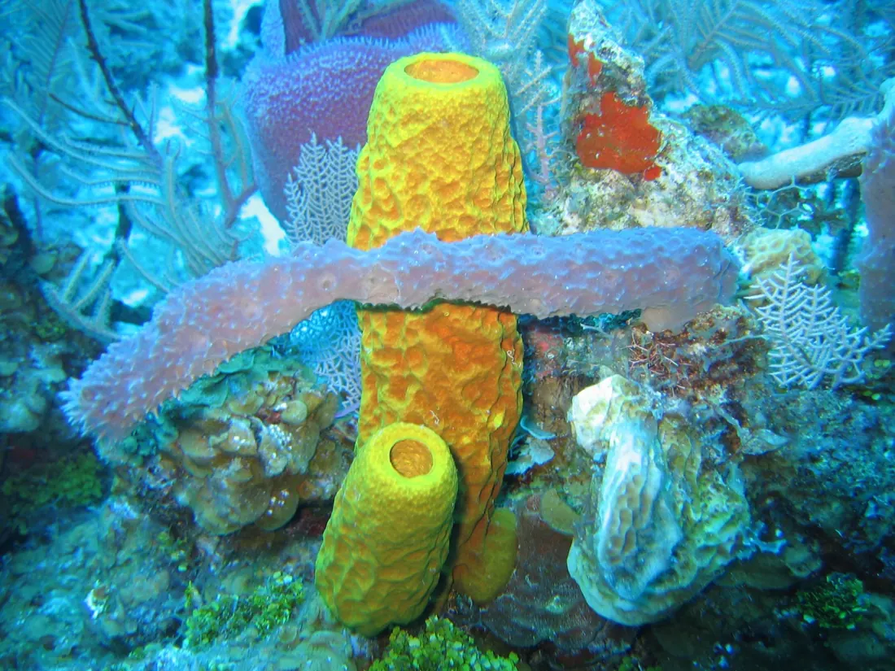
Foto: NOAA-OE (domínio público)Esponja
Para crianças menores de 10 anos e para quem teve pouco contato com o mar.
Animal sem olhos nem cérebro
Não tem olhos, nem ouvidos, nem coração, nem cérebro. Ainda assim, as esponjas são consideradas animais por causa do seu tipo de célula: as estruturas básicas são as mesmas das nossas.
Um dos hotéis mais cobiçados do oceano
As esponjas possuem vários buracos (poros), e muitos outros animais, como caranguejos, camarões e até peixes, usam a esponja como abrigo. Elas têm um importante papel ecológico.
Esponja do mar não é esponja de cozinha
As esponjas do mar são seres vivos e, portanto, formadas por células. Já as esponjas de cozinha são completamente artificiais, feitas de um conjunto de plásticos muito difíceis de reciclar, o que torna o processo economicamente inviável para a indústria. Isso é um grande problema, pois elas sujam muito rápido: o ideal é usar uma esponja de cozinha por apenas 7 dias, mas imagine a quantidade de resíduos que isso gera!
Filtradoras incansáveis
As esponjas são animais filtradores: bombeiam grandes volumes de água constantemente, o equivalente ao seu volume corporal a cada 5 segundos.
Sim, o Bob Esponja
O personagem Bob Esponja foi inspirado nesse animal.
Entre os animais mais antigos da Terra
Uma esponja-de-vidro da espécie Monorhaphis chuni, coletada a cerca de 1.100 m de profundidade no Mar da China Oriental, teve a idade estimada em cerca de 11 mil anos. Ela está entre os animais mais longevos que se conhece. Isso é muito antes da invenção da escrita, da história e das primeiras civilizações humanas!
Esponjas também branqueiam
Já ouviu falar de branqueamento de corais? Assim como eles, as esponjas podem manter uma relação simbiótica com algas fotossintetizantes, que fornecem oxigênio e carboidratos e dão cor à esponja. As mudanças climáticas ameaçam esses animais e os que dependem deles para obter alimento e abrigo. Em 2022, milhões de esponjas foram encontradas brancas em um evento de branqueamento em massa na Nova Zelândia.
Para quem quer saber como o animal funciona e qual é o seu papel no ambiente.
Paradas a vida toda
São organismos sésseis, ou seja, passam a vida toda parados no mesmo local. A simetria radial é um reflexo desse estilo de vida, pois maximiza a capacidade de explorar o ambiente.
Como elas comem?
São animais filtradores: todo o corpo é coberto por pequenos buracos (poros) por onde a água do mar entra, trazendo pequenas partículas de matéria orgânica que as células da esponja capturam e absorvem. Assim, as esponjas são importantes na ciclagem de nutrientes no ambiente marinho e ajudam a manter a água limpa.
Recifes de esponja
Você conhece os recifes de coral, mas já ouviu falar dos recifes de esponja? Assim como os famosos corais, as esponjas também fazem parte dos recifes e são consideradas bioconstrutoras, ou seja, organismos que atuam como estrutura para compor o ecossistema.
Ela consegue se regenerar
Quando são despedaçadas, as esponjas continuam vivas e acabam se fixando de novo no substrato, formando novas esponjas. A fragmentação, inclusive, é considerada uma das formas de reprodução assexuada do animal.
Remédios que vêm do mar
É possível extrair das esponjas compostos que podem ser usados na indústria. Em 2022, foi isolada, de uma esponja de Fernando de Noronha, uma substância eficiente no combate a bactérias que já se tornaram resistentes aos antibióticos disponíveis no mercado. Essa descoberta abre portas para novos remédios.
Para estudantes da área, outros educadores e pessoas muito curiosas.
Parada, mas nem tanto
A esponja parece ficar o tempo todo parada, mas não é bem assim: dependendo das condições do ambiente, ela consegue reorganizar suas células para otimizar o processo de filtração.
Uma esponja do tamanho de uma minivan
No Havaí, existe uma esponja-do-mar com cerca de 3,7 metros de comprimento e 2,1 metros de largura: é a maior esponja conhecida no mundo. Está a mais de 2 mil metros de profundidade e foi descoberta em 2015, por um veículo submarino operado remotamente. A idade dela é desconhecida, mas, pelo tamanho, os cientistas acreditam que possa ter centenas ou até milhares de anos.
Escudo químico
Imagine o quão difícil é se defender sem se locomover. Por isso, há um tipo de esponja que desenvolveu um escudo químico. Conhecida pelo engraçado nome de Crambe crambe, ela cria um grande “círculo químico” para afastar predadores. É também muito territorial: usa uma neblina tóxica para não deixar que outras espécies se aproximem.
Desmonta e monta de novo
Elas são capazes de se fragmentar em milhares de pedaços e se reconstruir a partir deles. De alguma forma, as células conseguem se identificar, se mover em direção umas às outras e voltar a constituir um único indivíduo. Isso foi descoberto em uma pesquisa na qual misturaram fragmentos de duas esponjas de espécies diferentes na mesma pilha: algumas semanas depois, cada espécie havia juntado seus fragmentos e se reconstituído.
Aprender sem cérebro
Mesmo sem cérebro, de certa forma elas são capazes de aprender: conseguem reconhecer uma situação que já ocorreu antes. Em um experimento de manipulação, o animal precisava ficar espalhado em uma placa de Petri. Nos primeiros 5 dias, isso era feito “à força”, pois o animal se retraía e espirrava água. No sexto dia, ele já não reagia dessa forma e passou a “colaborar” com o experimento.
O que mostrar e como conduzir a conversa com a peça da exposição em mãos.
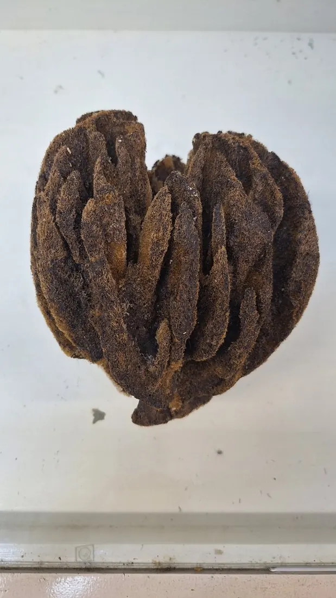
1O que sobra da esponja
Quando as esponjas morrem, toda a parte celular é perdida, mas as fibras e as espículas demoram mais tempo para se decompor, deixando essa estrutura. Note também que ela é toda furadinha, para que a água consiga entrar.
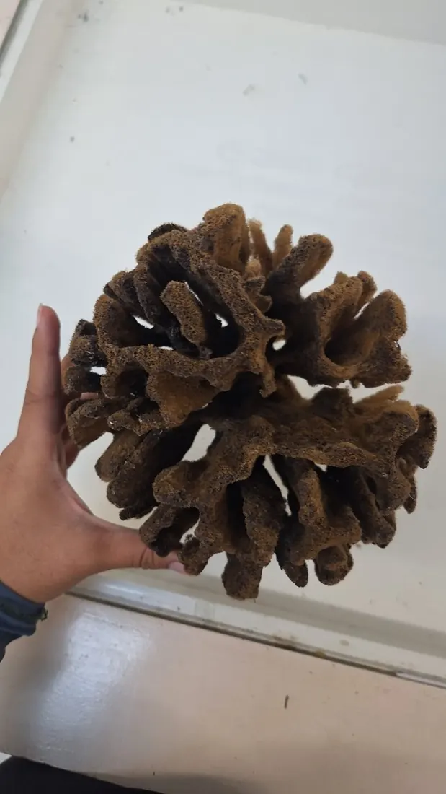
2Um labirinto para filtrar mais
Note como ela se ramifica, parecendo um labirinto, para aumentar sua superfície de contato com a água. Isso permite que ela filtre mais do que se fosse apenas uma esfera.
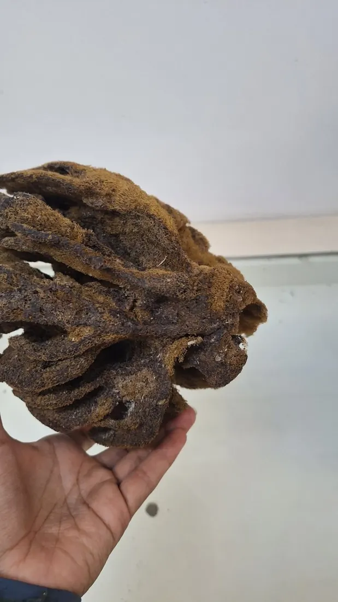
3Onde ela se fixava
Lembre que as esponjas são animais sésseis. Isso não quer dizer que elas não se mexam, mas que dependem de um substrato para se fixar. No exemplar, podemos ver a região que ela usava para isso.
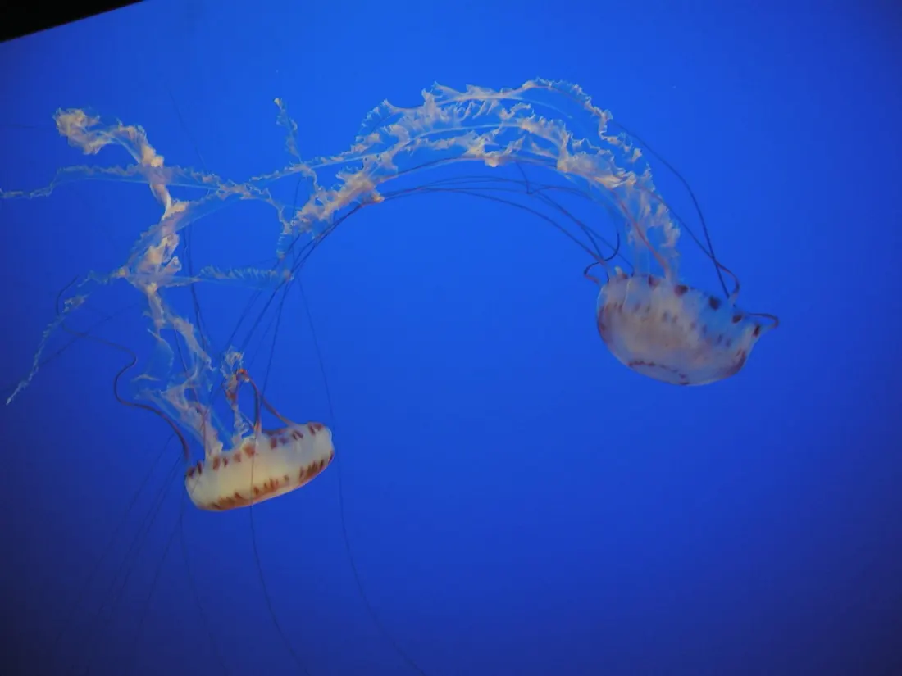
Foto: Neal Ziring (domínio público)Água-viva
Para crianças menores de 10 anos e para quem teve pouco contato com o mar.
O nome não é à toa
Enquanto os humanos têm entre 60% e 70% do corpo composto de água, as águas-vivas ficam entre 95% e 98%.
Não é queimadura, é envenenamento
O contato doloroso com os tentáculos de uma água-viva não é uma queimadura, e sim um envenenamento.
Por que elas envenenam?
Os tentáculos têm várias células especiais chamadas cnidócitos. Elas possuem pequenos arpões (nematocistos) com toxinas, que são disparados ao entrar em contato com alguma superfície e podem penetrar na pele humana (nem todos conseguem: depende da espécie). Servem para a defesa do animal e para capturar alimento. Sim, elas são carnívoras!
Perigosas para quem?
Para a maioria das águas-vivas, é necessária uma dose muito alta de veneno para levar uma pessoa adulta à morte. Já os peixes pequenos, que são seu verdadeiro alvo, podem ser paralisados só de encostar nos tentáculos.
Mesmo assim, não toque
Não vá inventar de pegar nos tentáculos: para pessoas com alergia, pode ser fatal (choque anafilático), e as irritações causadas pelo veneno são bem dolorosas e podem deixar cicatrizes.
Sem olhos, mas percebem a luz
Ao contrário de nós, elas não possuem cérebro nem olhos, mas conseguem sentir a presença ou a ausência de luz e de que direção ela vem. Experimente: peça para a pessoa fechar os dois olhos e cobrir um deles com a mão, deixando o outro exposto. Ela vai perceber a diferença e vivenciar como uma água-viva “enxerga”.
Elas não atacam de propósito
Depois que uma célula do tentáculo libera o veneno, ela precisa de um tempo para se reabastecer (cerca de 48 horas, dependendo da espécie). Ou seja: nesses acidentes, as águas-vivas perdem uma dose do veneno que usam para caçar e ficam vulneráveis por algumas horas.
Para quem quer saber como o animal funciona e qual é o seu papel no ambiente.
Existe água-viva macho e fêmea
Como elas não têm órgão genital para a cópula, as células masculinas e femininas são liberadas na água. Do encontro surge um zigoto, que vira uma larvinha (plânula). A larva vaga no oceano por alguns dias, se assenta no fundo e passa por uma metamorfose (sim, que nem as borboletas), transformando-se em um pólipo, que lembra muito uma anêmona e libera dezenas de miniáguas-vivas (éfiras). Esse ciclo com dois estágios (medusa e pólipo) permite que elas se espalhem, principalmente na fase larval, carregadas pelas correntes.
Por que aparecem tantas no verão?
No verão, é comum a presença de águas-vivas nas praias do Brasil, o que aumenta o risco de contato com banhistas. Nesse período, esses animais estão em fase de reprodução, se aglomeram e são levados pela corrente até a costa.
Primeiros socorros
Retire a pessoa da água imediatamente, para prevenir um afogamento por desmaio ou choque anafilático. Não lave com água doce nem coloque gelo: isso continua ativando os cnidócitos que estiverem na pele. Lave primeiro com água do mar e depois com vinagre, sem esfregar. A água do mar remove os cnidócitos sem ativá-los, e o pH ácido do vinagre e o calor ajudam a desnaturar as proteínas das toxinas, impedindo que se espalhem e aliviando a dor.
Pioneiras da natação
Foram os primeiros animais a ter um sistema nervoso rudimentar e órgãos bem simples, e os primeiros a desenvolver a natação: contraem o véu (a parte que parece um abajur), criando propulsão.
Movimento sem músculos
Não possuem músculos propriamente ditos (conjuntos de fibras), mas se movimentam pela contração de células longas, que podem ser entendidas como as antecessoras das células musculares dos animais mais complexos.
Digestão que começa antes da boca
Algumas águas-vivas começam a digerir as presas ainda vivas, antes de ingeri-las: junto com o veneno dos tentáculos, podem ser inseridas enzimas digestivas que liquefazem a presa de dentro para fora.
Para estudantes da área, outros educadores e pessoas muito curiosas.
Regeneração a vida inteira
As células totipotentes conseguem se diferenciar em qualquer célula do corpo (epiteliais, musculares, nervosas etc.). Nós, seres humanos, só as temos quando ainda somos embriões: de uma única célula totipotente, o zigoto, surgem todas as outras células e estruturas do corpo. Já as águas-vivas as mantêm por todo o ciclo de vida e podem substituir células perdidas a qualquer momento, o que explica seu rápido crescimento e poder de regeneração.
A água-viva “imortal”
Uma água-viva de poucos milímetros é conhecida como “água-viva imortal”. A espécie Turritopsis dohrnii (antes classificada como T. nutricula) tem uma capacidade única: quando é ferida ou ameaçada, consegue regredir a um estágio anterior do ciclo de vida e recomeçar, repetidas vezes. Ela não morre de “velhice”, mas ainda pode morrer devorada por um predador ou por doença.
Água-viva ao avesso
Cassiopea andromeda, espécie invasora no litoral brasileiro, não nada como as outras: fica no fundo, de cabeça para baixo, com os tentáculos virados para cima para capturar presas. O veneno não é forte para humanos, mas ela pode causar acidentes, pois você não precisa encostar nos tentáculos para ser queimado: ela produz um muco cheio de toxinas, criando uma “água que queima”. Alguns caranguejos se beneficiam disso e carregam a água-viva nas costas, como uma mochila, em uma relação mutualística.
A maior do mundo
A água-viva juba-de-leão (Cyanea capillata) é a maior do mundo: pode chegar a 2 m de diâmetro e ter até 1.200 tentáculos, com mais de 36 m de comprimento. É maior do que um prédio de 10 andares.
O que mostrar e como conduzir a conversa com a peça da exposição em mãos.
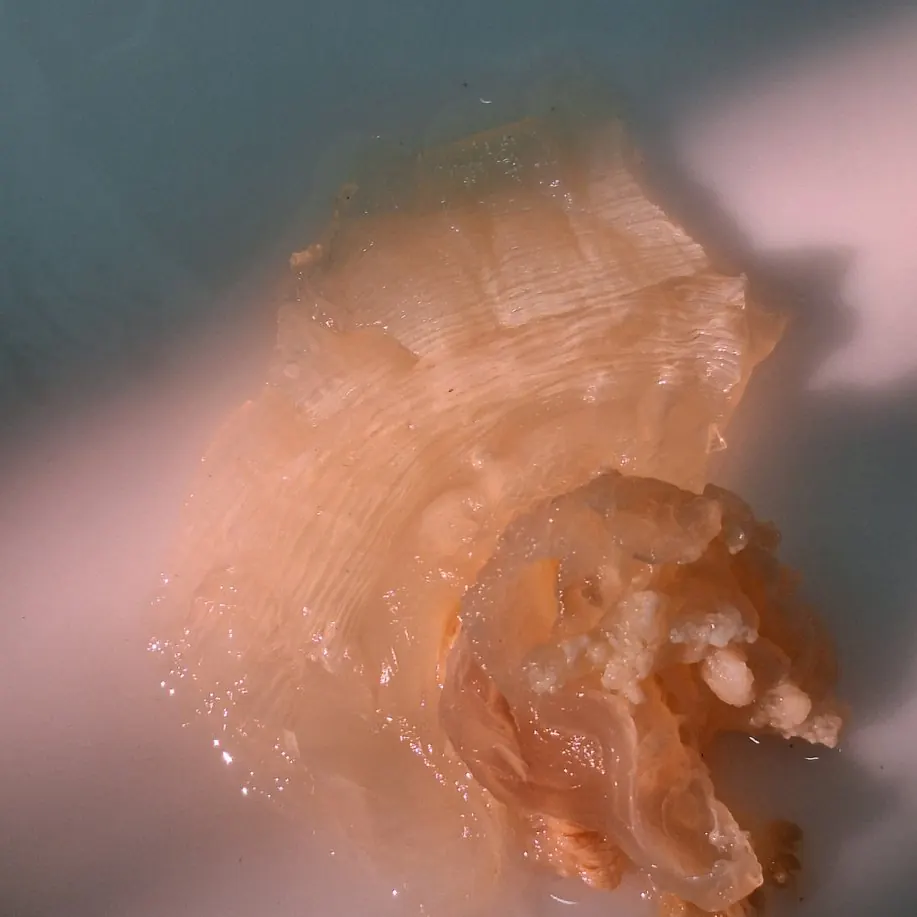
1ABVéu e tentáculos
O corpo é dividido em véu (A) e tentáculos (B). O véu lembra um abajur e é usado para nadar: são as suas contrações que impulsionam a água. Essa parte não possui cnidócitos e, por isso, não queima, mas não vá mexer com elas se fiando nisso.
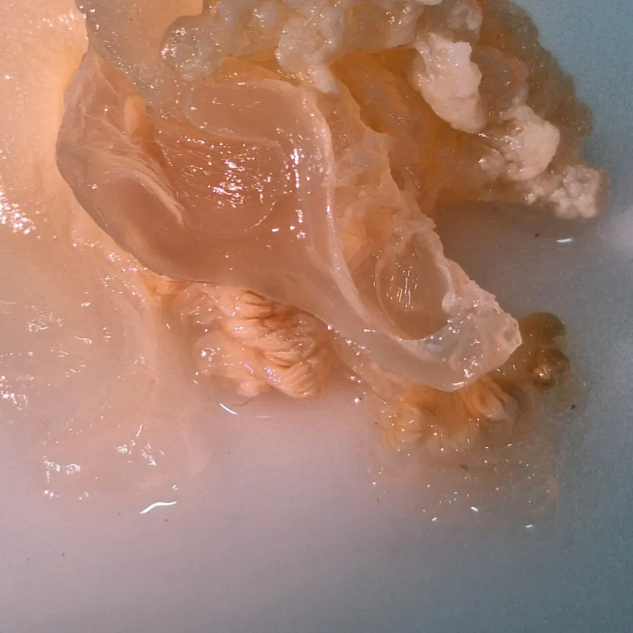
2Por que parece gelatina?
Elas ficam parecendo gelatina quando são conservadas em álcool, porque essa substância desidrata os tecidos, deixando-os mais rígidos e alterando o formato original.
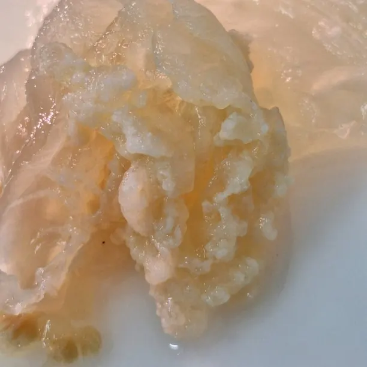
3Tentáculos de perto
Nas fotos, é possível observar os tentáculos mais de perto.
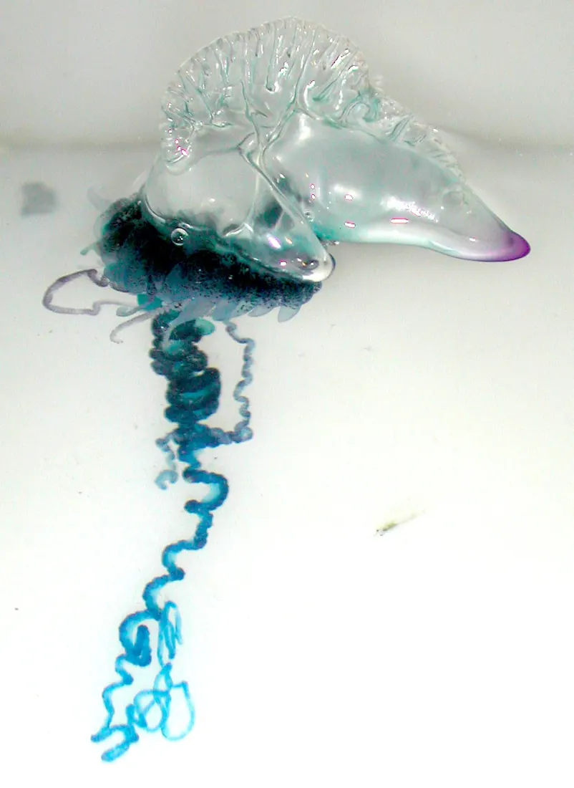
Foto: NOAA/OER, Islands in the Sea 2002 (domínio público)Caravela
Para crianças menores de 10 anos e para quem teve pouco contato com o mar.
Campeãs de regeneração
Os cnidários, em geral, têm alto poder de regeneração, mas os hidrozoários (como a nossa caravela) se destacam. Algumas espécies conseguem regenerar estruturas completamente novas, como a boca, após uma tentativa de predação. Outras, dissecadas para estudos em laboratório, se regeneram em alguns dias ao voltar para o aquário.
Campeã de acidentes
As caravelas são venenosas, e seus tentáculos têm, em média, 10 m, podendo chegar a 30 m. É o cnidário campeão de acidentes com banhistas no Brasil.
O que o contato pode causar
Além de irritação na pele, muita dor e cicatrizes que podem durar meses, o contato pode gerar dor no peito, vômitos e desmaios, se a neurotoxina se espalhar. Crianças e pessoas com saúde frágil são mais vulneráveis a quadros graves.
Por que o nome “caravela”?
Ao contrário das águas-vivas, a caravela não consegue nadar. Daí o nome, que remete às embarcações portuguesas da época das grandes navegações: ela fica boiando, à mercê das correntes. Por isso, em Fortaleza, é comum encontrá-las encalhadas no segundo semestre, quando os ventos ficam mais fortes.
Cores que avisam
O animal varia entre o azul, o roxo e o rosa. Independentemente da tonalidade, todas são venenosas, e as cores funcionam como defesa: chamam a atenção dos predadores, “informando” que ela é venenosa.
Para quem quer saber como o animal funciona e qual é o seu papel no ambiente.
Não é um animal: é uma colônia
A caravela é uma colônia de hidrozoários chamados zooides, que ficam sob o flutuador (pneumatóforo), também um zooide especializado. Vários indivíduos trabalham juntos: alguns cuidam da caça e formam os tentáculos (dactilozooides), outros fazem a digestão (gastrozooides) e outros produzem as células reprodutivas (gonozooides).
Mais calor, mais caravelas
Com o aumento da temperatura dos oceanos, causado pelas mudanças climáticas, as condições para a reprodução desses animais ficaram mais favoráveis. Assim ocorrem os blooms, quando uma quantidade muito grande deles é vista.
Um peixe que mora no perigo
O peixe-guerreiro-português (Nomeus gronovii) mantém uma relação de comensalismo com a caravela: não é afetado pelo veneno e nada junto a ela, alimentando-se das presas paralisadas pelos tentáculos.
Cuidado, mesmo morta
Mesmo depois de mortas, as caravelas ainda podem liberar toxinas ao serem manuseadas.
Para estudantes da área, outros educadores e pessoas muito curiosas.
O predador azul
O dragão-azul (Glaucus atlanticus) é uma lesma-do-mar capaz de se alimentar das caravelas, conhecida pelas cores vibrantes e por também ser venenosa. Ao comer a caravela, ele armazena os cnidócitos na superfície do corpo e, ao ser tocado, também pode liberar toxinas.
Defesa com muco
Ao ser predada, a caravela pode produzir muco intensamente, como forma de dissuadir o predador.
Comida de tartaruga
Apesar de um pouco perigosas para nós, as caravelas têm um papel importante na conservação das tartarugas marinhas, pois fazem parte da alimentação delas.
O que mostrar e como conduzir a conversa com a peça da exposição em mãos.
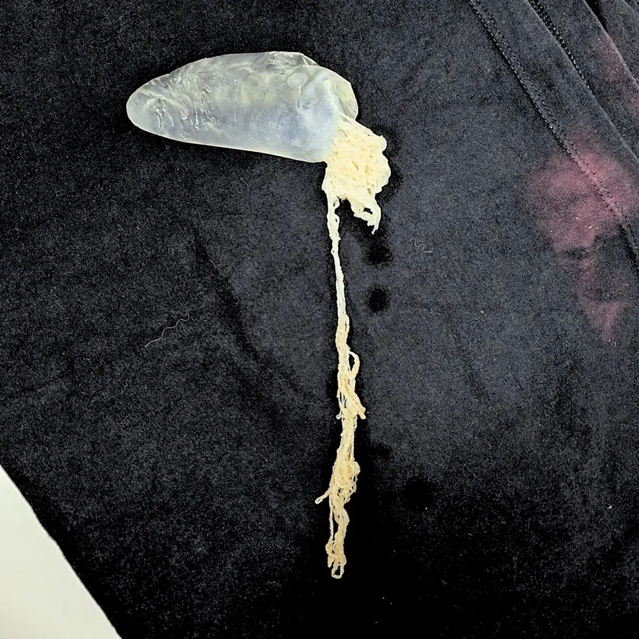
1Como ela fica quando está viva
Posição similar à do animal vivo. Lembre que os tentáculos são quase transparentes e muito maiores que o balão: ao ver o balão, vá para longe.
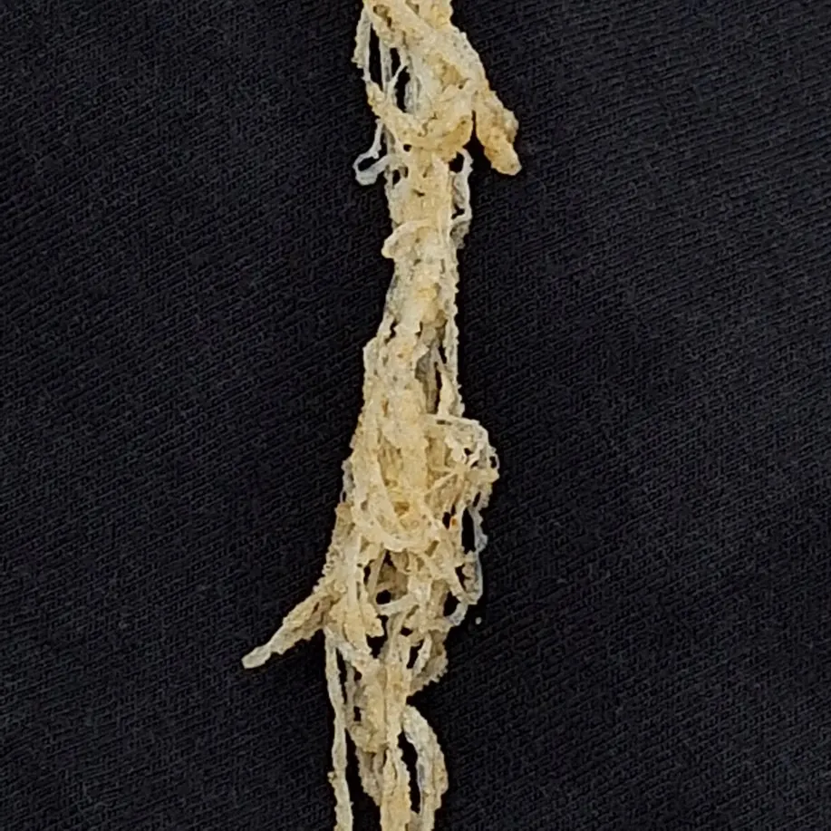
2Tentáculos de perto
Detalhe dos tentáculos, ou dactilozooides: zooides especializados na caça e na defesa, produtores das toxinas.
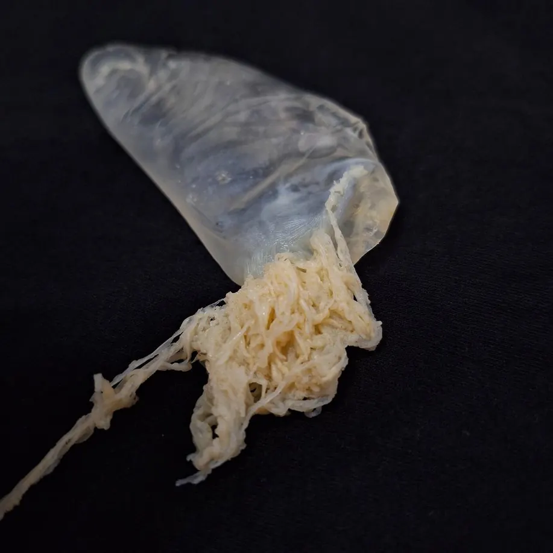
3ABO balão e a colônia
(A) Pneumatóforo, também chamado de balão ou flutuador. (B) Colônia de gastrozooides e gonozooides: cada “fio” é, na verdade, um indivíduo.
Coral
Para crianças menores de 10 anos e para quem teve pouco contato com o mar.
Muitos em um
São animais coloniais: um coral é formado por vários pólipos, organismos individuais que vivem juntos.
O esqueleto que conecta
O que conecta os pólipos é o esqueleto do coral, aquela parte branca, de calcário, que eles mesmos secretam, formando “casinhas” onde podem se expandir e se retrair. Esses são os corais pétreos. Já os corais moles têm um esqueleto interno, como várias peças espalhadas que deixam o corpo mais rígido.
O pólipo parece uma flor
Tem uma parte que o conecta à colônia, uma cavidade interna e uma boca com tentáculos ao redor.
Abre para caçar, fecha para se proteger
Normalmente, os pólipos ficam com os tentáculos abertos para capturar presas. Nos corais pétreos, ao se sentirem ameaçados, eles conseguem se retrair para dentro do esqueleto calcário e ficar protegidos.
Corais fazem clones
Um pedacinho arrancado por um predador ou pela força das ondas pode dar origem a uma nova colônia, se encontrar um local para se fixar. Os clones também surgem como pequenos brotos, que se desprendem da colônia-mãe quando estão grandes o suficiente. São formas de reprodução assexuada: não é preciso um parceiro, e os novos indivíduos são geneticamente idênticos.
Para quem quer saber como o animal funciona e qual é o seu papel no ambiente.
Dois organismos em um
Os corais são a junção de dois organismos de reinos completamente diferentes: as algas zooxantelas e os pólipos (cnidários). Os pólipos são transparentes: o que dá cor aos corais são essas algas, que vivem dentro de seus tecidos. É uma relação simbiótica, de benefício mútuo: a alga faz fotossíntese e fornece ao coral oxigênio e açúcares; em troca, o coral fornece proteção e CO2.
Menos de 1% do oceano, 25% da vida
Os recifes de corais representam menos de 1% dos ecossistemas oceânicos, mas abrigam mais de 25% da vida marinha, e são considerados o ecossistema mais biodiverso do mundo. Isso porque oferecem abrigo e micro-hábitats para muitas espécies diferentes.
Uma barreira natural
Os recifes também protegem as zonas costeiras do impacto das correntes e tempestades: são uma estrutura geológica que funciona como barreira, fazendo as ondas perderem força antes de atingir as praias.
Para estudantes da área, outros educadores e pessoas muito curiosas.
Corais que queimam
Alguns corais queimam como as águas-vivas: são os “corais-de-fogo”. Temos duas espécies registradas no Ceará: Millepora alcicornis e Millepora braziliensis.
O branqueamento
O que dá cor aos corais são as zooxantelas. Com o aumento da temperatura e da acidez dos oceanos (ambos causados pelo excesso de gás carbônico na atmosfera), o coral expulsa essas algas e perde a cor. Sem elas, não sobrevive por muito tempo, pois a captura de alimento com os tentáculos não supre sua necessidade energética. No primeiro semestre de 2024, um evento de branqueamento em massa atingiu diversos recifes, inclusive no Brasil: 77% dos ambientes recifais conhecidos passaram por estresse térmico, com altas taxas de branqueamento e mortalidade.
O maior coral do mundo
O maior coral já descrito foi encontrado em 2024, nas Ilhas Salomão. Pensava-se que era um recife inteiro, mas é uma única colônia, com mais de 34 m (maior que uma baleia-azul), que pode ter mais de 300 anos.
Comprar coral não é lembrancinha
Apesar de aparecerem em feiras e no artesanato, o comércio de corais sem autorização é crime ambiental no Brasil (Lei nº 9.605/1998), e o Ministério do Meio Ambiente orienta a não comprar artesanato feito com corais ou conchas.
O que mostrar e como conduzir a conversa com a peça da exposição em mãos.
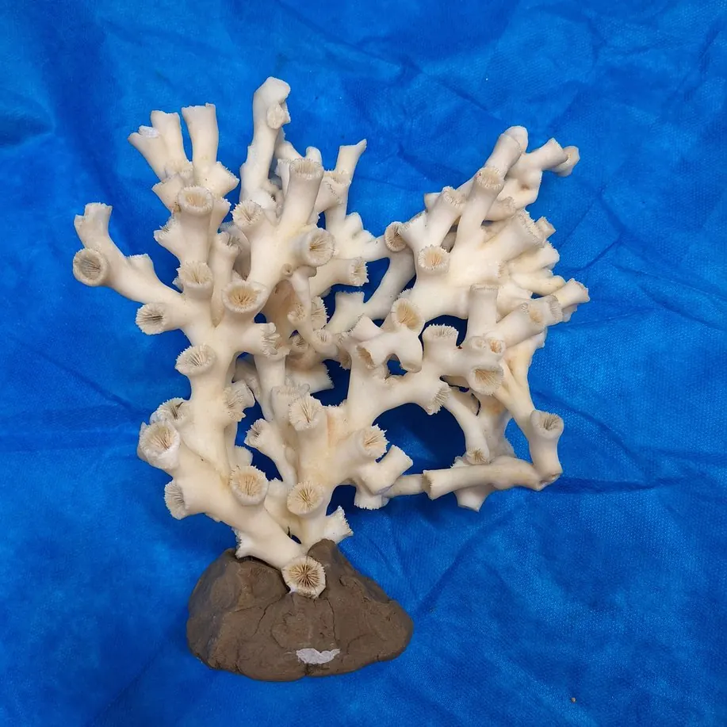
1A peça inteira
Note como é bem ramificada e de crescimento irregular. Aproveite para falar sobre o esqueleto de cálcio e o branqueamento de corais.
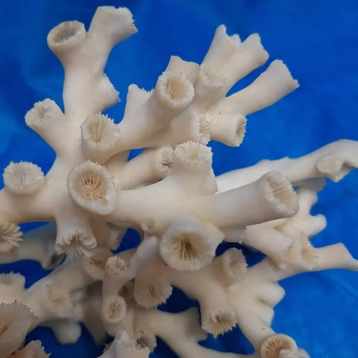
2APólipos em fases diferentes
Na mesma colônia, temos pólipos em fases de vida diferentes. É possível ver os que estavam começando a brotar (A).
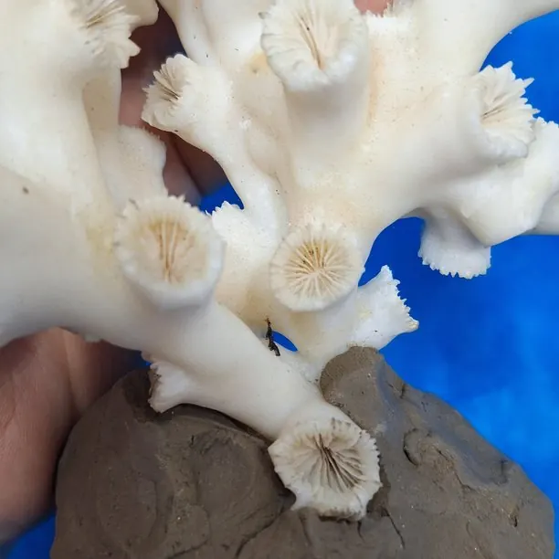
3Os septos
Observe de perto os septos: cada buraquinho desses era um indivíduo. Os maiores e mais antigos ficam na base da colônia.
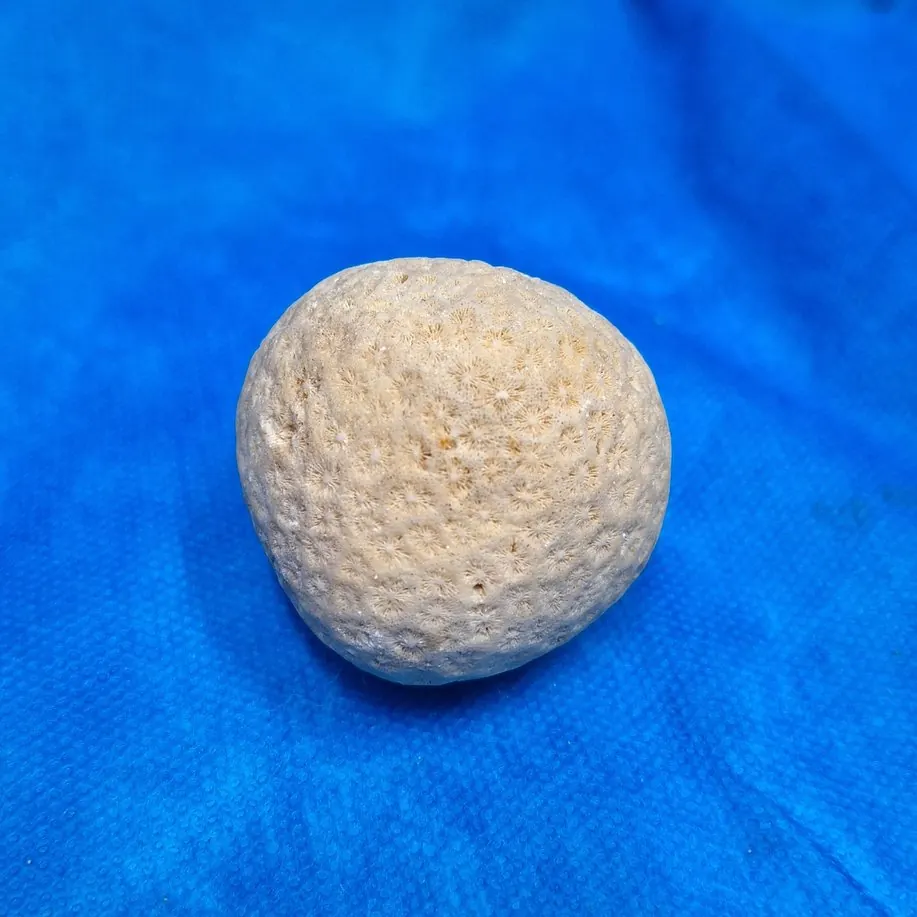
4Parece uma pedra, mas não é
Apesar de duro, esse material está cheio de buracos que um dia abrigaram pólipos, como dá para ver no detalhe da foto 5.
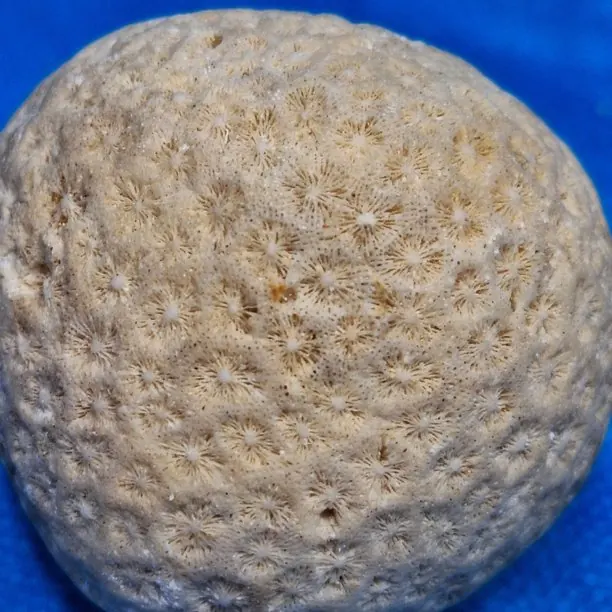
5AO detalhe de perto
Cada um desses buraquinhos (A) abrigava um pólipo.
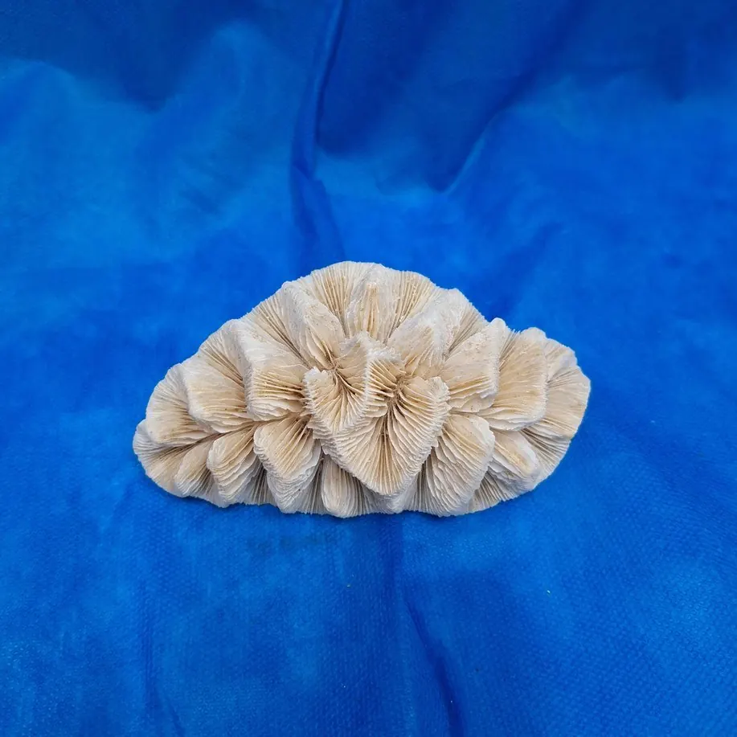
6Pedra-de-Iemanjá
Espécime de Meandrina braziliensis, espécie que só ocorre no Brasil (endêmica). Sua forma pode variar dependendo da profundidade em que vive, assim como a cor.
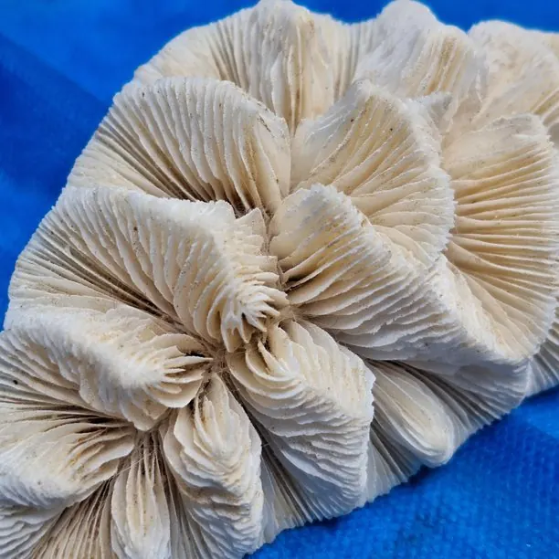
7Septos característicos
Nessa espécie, os septos são bem característicos.
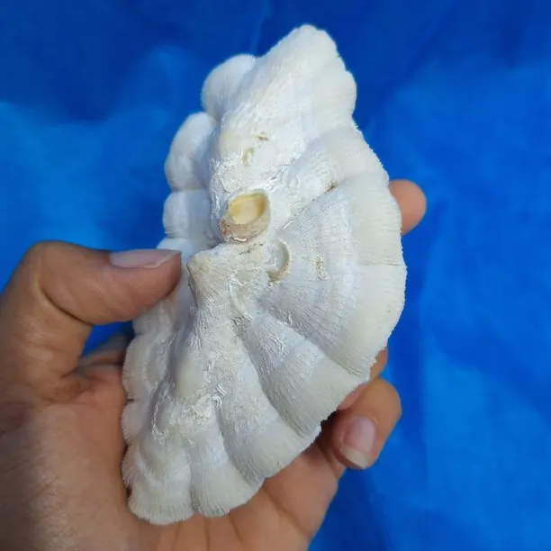
8AA base
Base (A) que conectava o coral ao fundo.
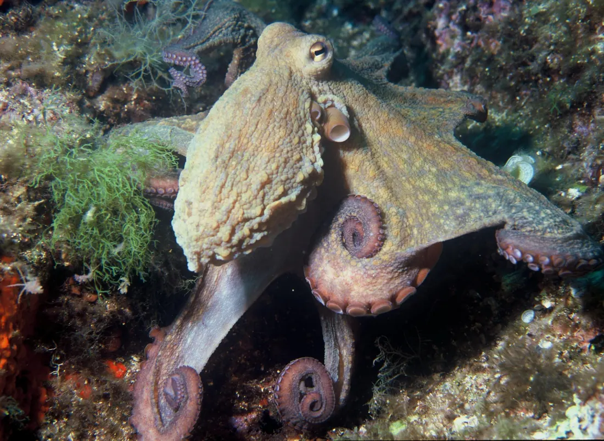
Foto: Albert Kok (domínio público)Polvo
Para crianças menores de 10 anos e para quem teve pouco contato com o mar.
Os 4 superpoderes do polvo
Você sabe quais são? (As crianças adoram essa!) Eles conseguem mudar a cor e a textura da pele para se camuflar nos recifes de coral, grudar em tudo usando as ventosas, soltar tinta para confundir os predadores e facilitar a fuga e passar por qualquer buraco, pois o corpo é completamente mole e maleável.
Polvo dentro da garrafa
Já viram um vídeo de um polvo entrando em uma garrafa? Ele consegue fazer isso porque o corpo não tem partes duras, apenas um bico, parecido com o de um papagaio, que fica na boca. Ele usa o bico para quebrar conchas e carapaças ou para injetar veneno, dependendo da espécie. Como o bico é a única parte dura, se ele passa pelo buraco, o restante do polvo também passa.
Braço novo em folha
Os polvos conseguem se regenerar: se um dos braços for arrancado por um predador, em algumas semanas um novo bracinho se forma.
Movido a jato
Os polvos se movem por propulsão a jato: puxam água para dentro e a expulsam com muita pressão por uma estrutura parecida com um cano, que fica na lateral da cabeça, chamada sifão.
Nove cérebros?
Polvos e lulas têm um sistema nervoso mais desenvolvido que o dos peixes, e de longe o mais complexo entre os invertebrados. Há quem diga que é como se os polvos tivessem 9 cérebros: um na cabeça e um em cada braço, que funcionam de forma independente e, ao mesmo tempo, interligada. Por isso, quando um polvo tem um braço amputado, o braço pode continuar se movimentando e reagindo a estímulos por horas.
Para quem quer saber como o animal funciona e qual é o seu papel no ambiente.
Aprendem tudo sozinhos
Os polvos não têm cuidado parental depois que os filhotes nascem: os polvinhos não têm contato com os pais. Tudo o que sabem (caçar, fazer tocas, se defender de predadores) eles aprendem sozinhos. O polvo-mímico (Thaumoctopus mimicus), por exemplo, aprende a imitar diversos animais marinhos, como cobras e peixes, para caçar e se defender.
Mães até o fim
Em muitas espécies, depois de colocar os ovos, a fêmea passa a guardá-los o tempo todo e deixa de se alimentar, ficando cada vez mais fraca para proteger a prole. Ao final do processo, ela morre. Ou seja: essas fêmeas se reproduzem uma única vez.
Onde foi parar a concha?
Os polvos são parentes dos gastrópodes e dos bivalves, mas, ao longo da evolução, deixaram de produzir a concha. A maioria vive em recifes e precisa passar por frestas e buracos pequenos, e a concha provavelmente atrapalharia. Com o corpo totalmente mole, eles se protegem dos predadores e alcançam as presas com facilidade.
Polvos sonham?
Pesquisas apoiam a ideia de que, assim como nós, os polvos dormem e podem sonhar, talvez até ter pesadelos. Durante o sono, alternam fases inativas e ativas, nas quais mudam de cor. Em um estudo, os polvos às vezes acordavam de repente e mudavam da posição de descanso para a de defesa ou ataque, o que pode ser interpretado como a lembrança de um pesadelo.
Para estudantes da área, outros educadores e pessoas muito curiosas.
Pequeno, lindo e perigoso
O polvo-de-anéis-azuis (gênero Hapalochlaena) tem anéis azuis que brilham quando ele se sente ameaçado: um aviso aos predadores. Um único animal tem veneno suficiente para matar 26 adultos em poucos minutos. Pela mordida, ele inocula uma neurotoxina que bloqueia os sinais elétricos dos nervos: no início, causa só dormência, mas pode levar a uma parada respiratória ou cardíaca se atingir os músculos do diafragma e do coração. Já foi documentado até que, durante o acasalamento, o macho envenena a fêmea para não ser comido por ela.
Como o polvo muda de cor?
Tudo acontece graças aos cromatóforos, células espalhadas por toda a pele que funcionam como bolsinhas de pigmento e podem se contrair ou se expandir. A combinação de bolsinhas abertas e fechadas gera as cores. A mudança é muito rápida e controlada pelo animal, como um movimento muscular.
Três corações
O polvo tem três corações. Dois trabalham só para fazer o sangue passar pelas brânquias, onde ele libera gás carbônico (CO2) e recebe oxigênio (O2). O terceiro leva esse sangue oxigenado para os órgãos e músculos. E tem mais: o terceiro coração para de bater quando o animal nada, o que explica por que ele prefere rastejar.
Tinta que pode virar remédio
A tinta que os polvos liberam para se defender tem grande potencial farmacológico: estudos mostraram que a tinta de Octopus vulgaris tem ação antioxidante, antimicrobiana e anticancerígena.
Por que ele não se enrola?
As ventosas têm uma sucção poderosa e, com 8 braços, seria de esperar que o polvo vivesse “se enrolando”. Isso não acontece porque a pele emite um sinal químico que faz as ventosas perderem a força ao tocar o próprio corpo. Mas um polvo consegue grudar em outro, porque o sinal é específico de cada indivíduo.
O que mostrar e como conduzir a conversa com a peça da exposição em mãos.
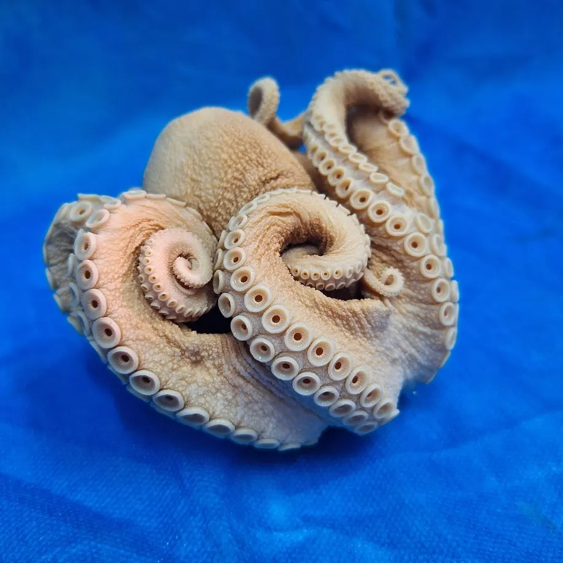
1AO polvo inteiro
Lembre de dizer que são 8 braços e falar dos superpoderes dos polvos (camuflagem, tinta, grudar e passar por lugares apertados). Nossa peça ficou toda enrolada, por isso não dá para ver os detalhes da cabeça (A).
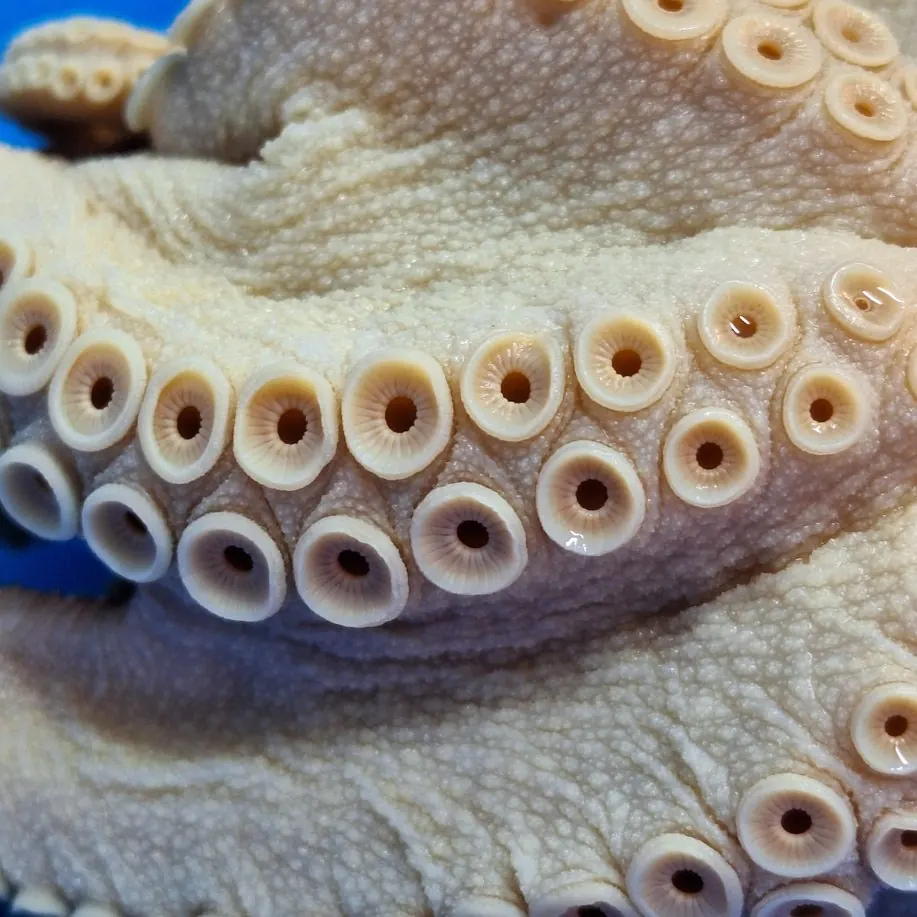
2AAs ventosas
Detalhe das ventosas (A): elas usam a pressão, criando um pequeno vácuo, para grudar nas superfícies.
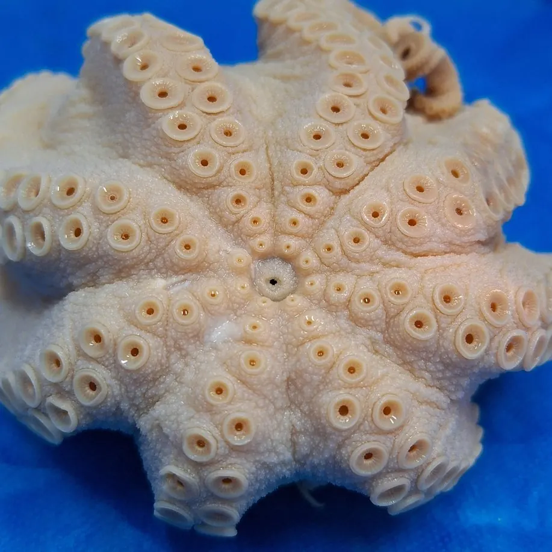
3AA boca e o bico
Na parte de baixo do animal, cercada pelos braços, fica a boca (A), armada com uma estrutura levemente rígida que lembra um bico de papagaio. Ele é usado para quebrar conchas e carapaças na alimentação, e seu formato pode ajudar a identificar a espécie.
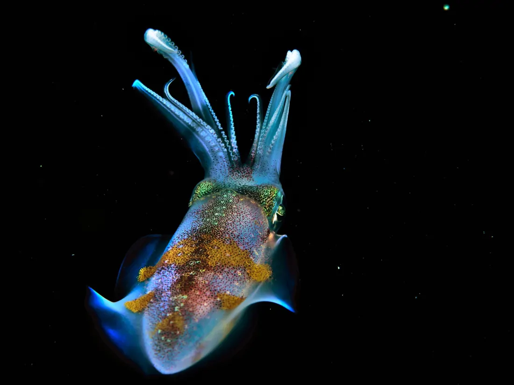
Foto: Rickard Zerpe (CC0)Lula
Para crianças menores de 10 anos e para quem teve pouco contato com o mar.
Rápidas e ágeis
As lulas são muito rápidas na água. Para se mover, combinam a propulsão a jato (puxam água e a expulsam com força pelo sifão) com as nadadeiras da cabeça, que direcionam o caminho.
Mais braços que o polvo
O polvo tem 8 braços, todos iguais. A lula tem 8 braços e mais um par extra, os tentáculos, que são mais compridos e têm uma ponta achatada.
Ventosas com dentes
As ventosas da lula são mais “agressivas”: têm um anel de dentes para se agarrar à presa e ficam presas aos braços por uma hastezinha, o pedúnculo. A sucção não é tão forte quanto a do polvo, mas, por serem pedunculadas, elas giram, o que dificulta a fuga da presa.
Tinta irritante
Assim como os polvos, as lulas têm um saco de tinta para defesa. A tinta pode conter alcaloides, substâncias que irritam os receptores químicos de outros animais.
Para quem quer saber como o animal funciona e qual é o seu papel no ambiente.
A “pena” de lula
Assim como os polvos, as lulas foram perdendo a concha ao longo da evolução, mas não completamente. Algumas espécies mantêm uma concha interna que ajuda na flutuação, controlando a quantidade de ar dentro dela. Outras ficaram só com um resquício, conhecido como pena de lula, que funciona quase como uma coluna, mantendo o corpo reto.
Moradoras das profundezas
Muitas lulas vivem a mais de 1.000 m de profundidade. Lá, a luz do sol não chega, a água é fria, tem menos oxigênio, a pressão é gigantesca e há poucas presas. Ainda se sabe pouco sobre como elas sobrevivem lá embaixo. Até meados do século XIX, acreditava-se que não existia vida abaixo de 550 m (a chamada Teoria Azoica), ideia descartada com as expedições oceanográficas que vieram depois.
Para estudantes da área, outros educadores e pessoas muito curiosas.
Sobreviventes antigas
O grupo das lulas e dos polvos, os cefalópodes, é muito antigo: os fósseis mais antigos aceitos são do final do período Cambriano, há cerca de 500 milhões de anos. Desde então, o grupo atravessou as 5 grandes extinções em massa, e já foram descritas mais espécies fósseis de cefalópodes do que espécies vivas.
A lula colossal
Um dos maiores invertebrados do mundo é a lula-colossal (Mesonychoteuthis hamiltoni), que vive nas profundezas e raramente é vista. É o invertebrado mais pesado que se conhece: o maior exemplar registrado pesava 495 kg, e estima-se que ela possa passar de 10 m de comprimento. Ela também tem o maior olho conhecido do reino animal, com 27 a 30 cm de diâmetro, maior que uma bola de basquete.
Coração de lula
Assim como nós, as lulas têm coração. Ele é bem mais simples que o dos mamíferos, mas é uma estrutura muscular que bombeia o sangue pelo corpo.
O que mostrar e como conduzir a conversa com a peça da exposição em mãos.
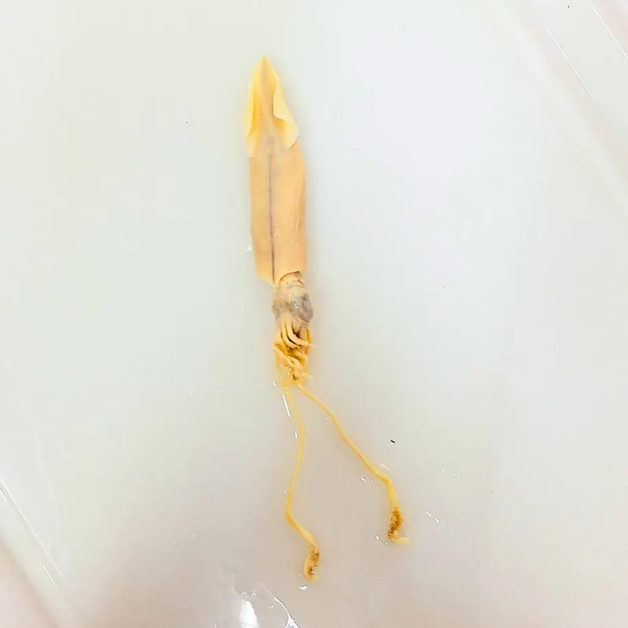
1Feita para nadar
Note que, diferente do polvo, a lula tem um formato mais aerodinâmico. Ela é uma ótima nadadora e tem até nadadeiras no topo da cabeça.
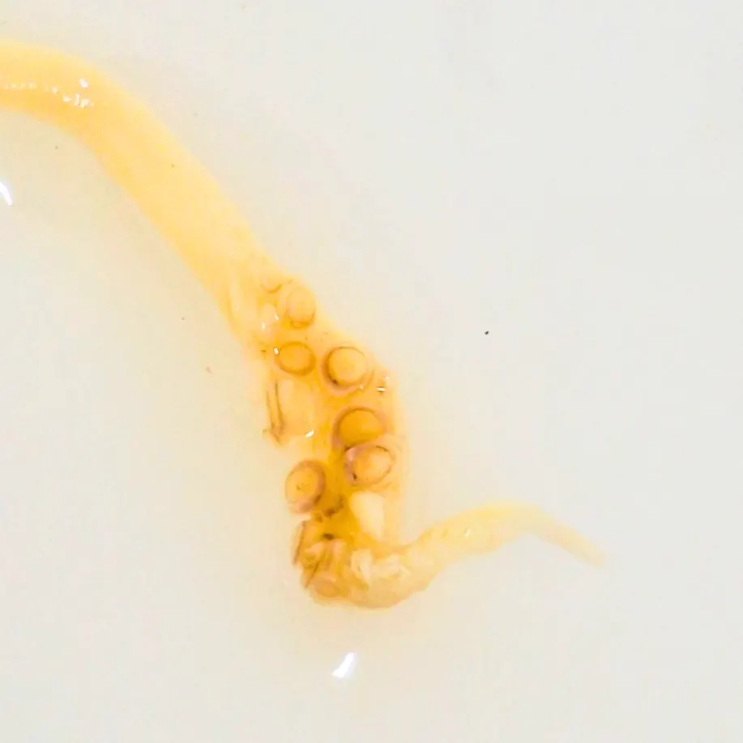
2Ventosas pedunculadas
Em detalhe, as ventosas de um dos braços. Diferentes das do polvo, elas são pedunculadas (unidas ao braço por uma haste), têm mais mobilidade e um anel com pequenos dentes, feito para caçar.
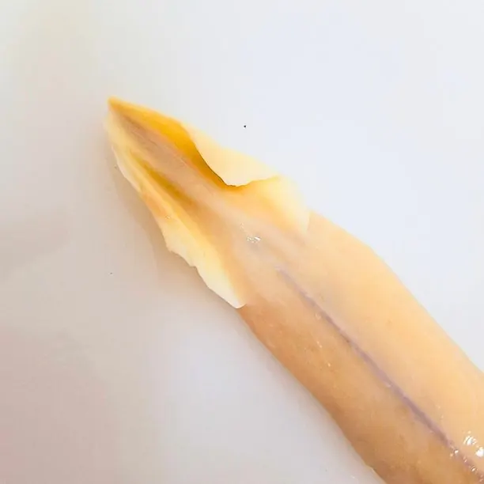
3A pena
A pena de lula, resquício evolutivo da concha, aparece como uma linha na região da cabeça. Ela pode ajudar na flutuação do animal.
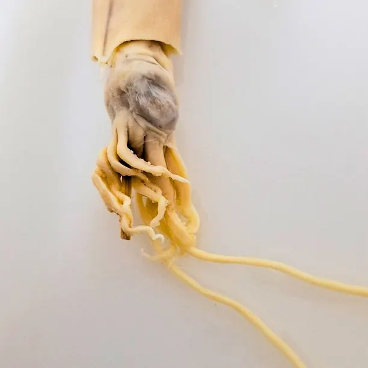
4Braços e tentáculos
Outra diferença: a lula tem 8 braços (mais curtos) e 2 tentáculos (mais longos), somando 10 apêndices.
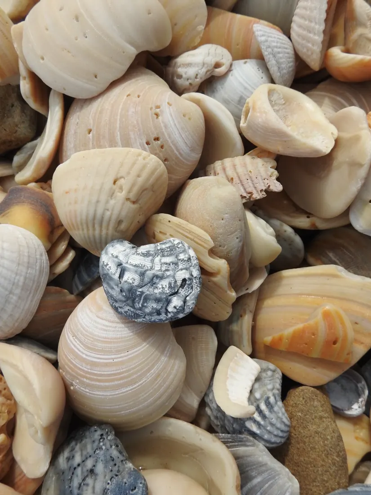
Foto: National Park Service (domínio público)Bivalves
Para crianças menores de 10 anos e para quem teve pouco contato com o mar.
Duas valvas
Assim como polvos, lulas e gastrópodes, os bivalves são moluscos. O nome vem das duas (bi) valvas, popularmente chamadas de conchas, que envolvem e protegem a parte mole do animal.
Concha é feita por animal
Muita gente pensa que as conchas são feitas pelo mar ou pela areia, como se fossem pedras. Mas elas são produzidas por animais: são o que o animal deixa para trás quando morre, assim como os nossos ossos.
Filtradores
Os bivalves são seres simples, filtradores, e vivem sempre presos ou enterrados em alguma superfície: pedras, areia, algas, raízes do mangue e até a pele de outros animais. Para se alimentar, usam o sifão, que lembra um canudinho e suga a água com pequenas partículas de restos de animais e plantas.
Comida, cultura e trabalho
Muitos são usados na alimentação, como ostras e mexilhões, e existem fazendas para criá-los. Muitas comunidades tradicionais costeiras e ribeirinhas dependem deles na mariscagem, atividade tradicional feita principalmente por mulheres.
Conchas e artesanato
As conchas também têm importância cultural e são usadas em adornos, como roupas, colares e brincos. Na feira da Beira-Mar, é possível ver muito artesanato feito com elas, mas a comercialização exagerada pode gerar desequilíbrios ambientais.
Para quem quer saber como o animal funciona e qual é o seu papel no ambiente.
Linhas que contam a idade
A concha é feita de carbonato de cálcio, o mesmo material do esqueleto dos corais e das carapaças dos crustáceos. Para produzi-la, o bivalve extrai cálcio da água do mar e o deposita aos poucos. Essa deposição contínua gera linhas de crescimento, visíveis na concha. Em algumas espécies, dá para usá-las para calcular a idade do animal e até quantas vezes ele se reproduziu, pois nesse período o crescimento para e a energia vai para a produção dos gametas.
Pode levar conchas da praia?
No Brasil, não há uma lei nacional específica sobre recolher algumas conchas vazias na praia, mas o Ministério do Meio Ambiente orienta a não retirá-las e a não comprar artesanato feito com conchas ou corais. Em áreas protegidas a regra é mais dura: na APA de Jericoacoara, por exemplo, uma norma do Ibama proíbe retirar areia, pedras, conchas ou algas sem autorização. E vender ou exportar conchas sem comprovar a origem é irregular: em 2025, Ibama e Receita Federal apreenderam 972 conchas no aeroporto de Fortaleza que iriam para a Itália, incluindo duas espécies ameaçadas, e a empresa foi multada em mais de R$ 250 mil. Lá fora também há regras duras: na Sardenha (Itália), uma lei de 2017 prevê multas de 500 a 3.000 euros para quem leva areia, pedras ou conchas das praias.
O ciclo do cálcio
Quando o bivalve morre, a concha fica para trás. Com a ação da água e o atrito com o fundo, ela se desgasta e se dissolve, devolvendo o cálcio para a água para que outros animais o usem em suas conchas e carapaças. Ao remover muitas conchas, interrompemos esse ciclo e prejudicamos o estoque de cálcio daquele lugar.
Para estudantes da área, outros educadores e pessoas muito curiosas.
Conchas mais frágeis
Os oceanos absorvem parte do gás carbônico (CO2) liberado pela queima de combustíveis fósseis. Esse excesso causa a acidificação dos oceanos, que altera a química da água e dificulta a deposição do cálcio. Em alguns lugares do mundo, já foi relatado que as conchas estão ficando mais finas e corroídas, deixando os bivalves mais vulneráveis aos predadores.
Faxineiros do mar
Os bivalves prestam um importante serviço ecossistêmico (benefícios que a natureza oferece de graça e que mantêm as condições para a vida, como as microalgas que produzem oxigênio). Ao filtrar a água para se alimentar, removem partículas pequenas e evitam que a água fique turva e bloqueie a luz do sol, essencial para as algas que fazem fotossíntese e formam a base das teias alimentares marinhas.
Como nasce uma pérola
Algumas espécies produzem pérolas, uma estratégia de defesa contra partículas estranhas que ficam presas dentro da concha. Ao detectar o corpo estranho, o animal o cobre com nácar, camada por camada, até formar a pérola, processo que pode levar de 2 a 4 anos. Em fazendas de pérolas, a partícula é inserida de propósito. As pérolas podem ter várias cores (branca, rosa, azul, preta, roxa, amarela, laranja), dependendo da espécie. A joia de pérola mais cara já vendida foi um pingente com uma grande pérola natural que pertenceu à rainha Maria Antonieta, leiloado em 2018 por cerca de 36 milhões de dólares.
O que mostrar e como conduzir a conversa com a peça da exposição em mãos.
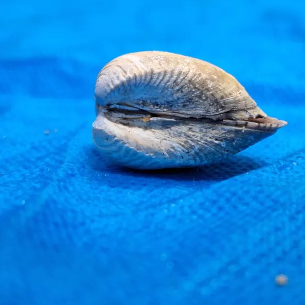
1Mactrellona alata
Use para mostrar as duas valvas fechadas, como o animal fica protegido dentro delas.
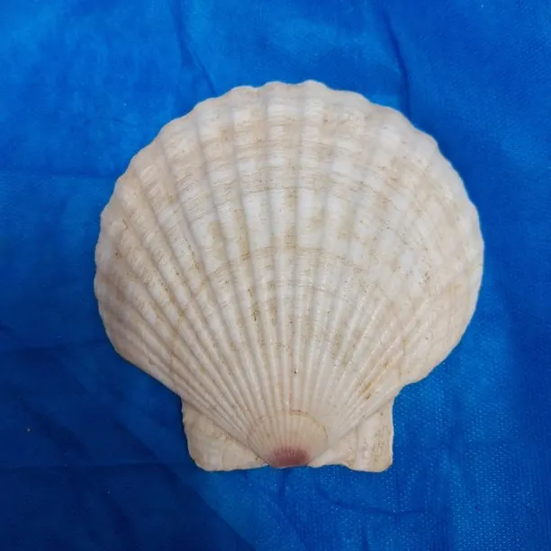
2Euvola ziczac
Uma concha da família Pectinidae, a mesma das vieiras.
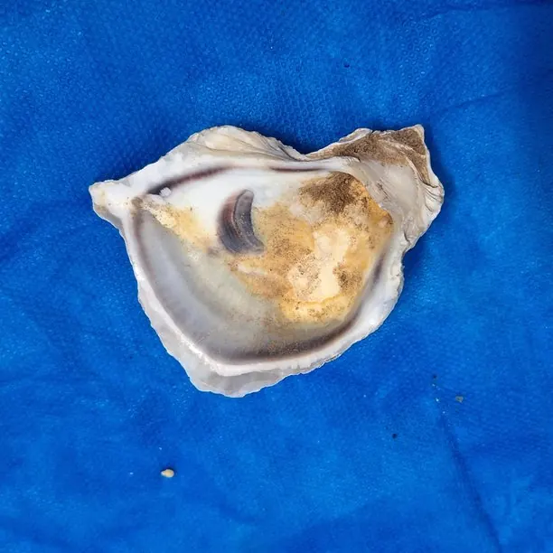
3Ostra
Muito comum no manguezal.
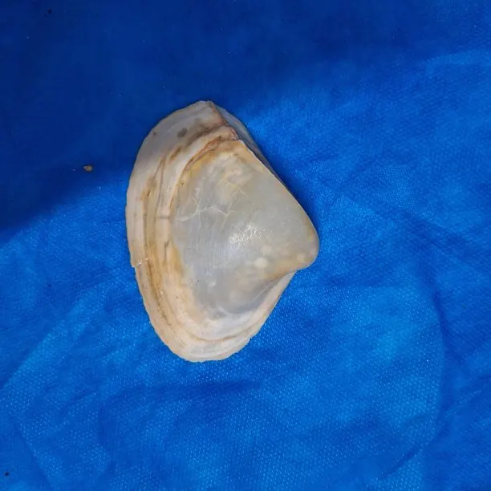
4Anomalocardia flexuosa
Muito usada na mariscagem e no artesanato.
Linhas de crescimento
Espécie da família Pectinidae, muito boa para observar as linhas de crescimento.
Spondylus americanus
Temos as duas valvas: use para mostrar como elas se encaixam. Aponte também para a massa branca presa em uma delas (A): é uma alga calcária. No oceano, qualquer superfície rígida pode servir para um organismo se fixar.
Conchas com espinhos
Os espinhos são uma característica desse gênero. Acredita-se que ajudem a evitar predadores: além de a concha ser muito dura, os espinhos podem machucar a boca de um animal maior.
Gastrópodes
Para crianças menores de 10 anos e para quem teve pouco contato com o mar.
Uma concha em espiral
Os gastrópodes são moluscos, parentes dos bivalves, polvos e lulas, mas produzem uma só concha, que dá voltas ao redor de um eixo (a columela) formando uma espiral, onde o animal entra e sai quando precisa.
Uma porta na concha
O formato, a cor, o tamanho e o desenho da concha variam de acordo com a espécie. Algumas têm um opérculo, estrutura que funciona como uma porta, abrindo e fechando a entrada da concha.
Do mar à terra
Os gastrópodes são os únicos moluscos que conquistaram o mar, a água doce e a terra. As conchas das espécies marinhas são bem mais pesadas que as das terrestres, porque precisam resistir à força das ondas e aos predadores. E, dentro da água, carregar esse peso é bem mais fácil.
Por que algumas conchas ficam brancas?
A concha tem uma camada orgânica externa, o perióstraco, que é pouco resistente e é refeita constantemente enquanto o animal está vivo. Depois que ele morre, essa camada se solta e se decompõe, deixando só a parte de cálcio, por isso a cor branca.
Cuidado com as conchas-cone
Alguns gastrópodes são predadores e caçam outros moluscos e crustáceos, e podem ser até peçonhentos, como os da família Conidae, as “conchas-cone”. Eles têm um dente modificado para injetar veneno que, dependendo da espécie e da quantidade, pode causar muita dor, paralisia e até a morte, principalmente se a vítima estiver mergulhando. Na Austrália, causam acidentes com coletores de conchas desavisados.
Resistentes a tudo
Muitas espécies vivem na zona entremarés: em poças dos recifes de arenito ou na faixa de areia da praia. Elas sobrevivem aos extremos da maré baixa e da maré alta, com variações diárias de nível da água, temperatura, sol, salinidade, pH e oxigênio.
Para quem quer saber como o animal funciona e qual é o seu papel no ambiente.
Voluta ebraea
Uma das espécies do acervo é a Voluta ebraea, endêmica do Nordeste brasileiro. Por ser muito bonita, sofre com a extração ilegal e com a venda dentro e fora do país (dá para encontrá-la à venda até na internet). Uma curiosidade: a pele do molusco tem o mesmo desenho e as mesmas cores da concha.
Conchas contam histórias
As conchas registram o crescimento do animal: dá para ver as linhas de crescimento ao redor das voltas e da abertura do sifão (o “canudinho” por onde o animal capta água para respirar). Também dá para ver as paradas de crescimento, onde a abertura ficou mais grossa. Isso é fácil de observar na nossa Cassis tuberosa, que engrossa muito a abertura nos períodos de reprodução.
Uma casa para outros bichos
Por serem superfícies duras, as conchas podem abrigar outros organismos: cracas, briozoários, hidrozoários, algas, ascídias, vermes marinhos (poliquetas) e até outros moluscos. Nesse sentido, são verdadeiros micro-hábitats.
O búzio-de-chapéu
Titanostrombus goliath está entre os maiores gastrópodes do mundo e é chamado de “búzio-de-chapéu” pela grande aba que forma na abertura. É muito cobiçado para decoração. Herbívoro, depende dos bancos de algas e vem sofrendo com a perda de hábitat por causa da pesca de arrasto e de derramamentos de óleo. É símbolo da Sociedade Brasileira de Malacologia e está classificado como vulnerável à extinção no Brasil. Os jovens ainda não têm a aba e são facilmente confundidos com outras espécies.
Moedas e rituais
As conchas de gastrópodes têm grande importância para muitas comunidades tradicionais: algumas as usaram como moeda, e outras, como objetos sagrados em rituais.
A protoconcha
Como a maioria dos invertebrados, os gastrópodes têm uma fase larval: minúsculos e leves, são carregados pelas correntes, o que espalha a espécie. Em certo momento, começam a produzir a concha. Nos adultos, dá para ver só um pequeno resquício dessa primeira concha, a protoconcha.
Para estudantes da área, outros educadores e pessoas muito curiosas.
O “barulho do mar” na concha
Sabe aquele “barulho do mar” que a gente escuta ao colocar uma concha no ouvido? É um fenômeno acústico: os sons do ambiente ricocheteiam várias vezes dentro do objeto côncavo antes de chegar ao ouvido, gerando um som parecido com o das ondas.
Um sexto sentido
Os gastrópodes têm quimiorrecepção: “enxergam” o mundo pelas substâncias dissolvidas na água, graças a um órgão escondido dentro da concha, o osfrádio.
Cicatrizes na concha
As conchas são resistentes e, enquanto o animal está vivo, recebem manutenção constante. Por isso, em algumas dá para ver “cicatrizes” de tentativas de predação. Há registro até de conchas com duas aberturas: uma bloqueada por uma pedra e outra mais rudimentar, provavelmente uma tentativa do animal de criar uma nova saída.
O que mostrar e como conduzir a conversa com a peça da exposição em mãos.
Charonia variegata
Note as paradas de crescimento ao longo das voltas da concha.
Cassis tuberosa
Observe o engrossamento da abertura, que marca as paradas de crescimento nos períodos de reprodução.
Macrostrombus costatus jovem
Exemplar ainda jovem.
Titanostrombus goliath jovem
O búzio-de-chapéu ainda sem a aba característica dos adultos.
Pugilina tupiniquim
Nomeada em homenagem aos povos originários, é uma espécie endêmica do Brasil.
Pomacea sp. (aruá)
Gênero de água doce muito comum no Ceará. Deixa a desova em ovinhos cor-de-rosa em pedras ou plantas.
Cypraea zebra
Tem a abertura muito estreita e comprida, sem as voltas tradicionais das outras conchas espiraladas.
Aliger gallus
Concha já bem rolada. Use para mostrar que as conchas se “dissolvem” e voltam para o mar, por isso não devemos recolhê-las.
Voluta ebraea com marca de predação
Use para explicar que a marca é como uma cicatriz.
Estrela-do-mar
Para crianças menores de 10 anos e para quem teve pouco contato com o mar.
Cinco braços, mas não nada
As estrelas-do-mar vivem no fundo. Apesar dos braços, não nadam: elas se movem graças a centenas de perninhas chamadas pés ambulacrais, que ficam na parte de baixo do corpo.
Gruda até no vidro
Os pés ambulacrais também fazem sucção, como as ventosas do polvo. Por isso, as estrelas conseguem se pendurar em paredões de pedra e no vidro dos aquários. Quem assistiu a “Procurando Nemo” deve lembrar de uma personagem que fazia isso.
Nem toda estrela tem 5 braços
Apesar de chamadas de “estrelas” pela figura clássica de 5 braços, podem ter 7, 9, 15 e até 40 braços, dependendo da espécie, e variam muito em forma e tamanho.
Da poça de maré ao fundo do mar
São animais muito antigos e se espalharam por todos os oceanos: vivem em poças de maré, na areia da praia e a mais de 6.000 m de profundidade, onde não há luz e há pouco oxigênio.
Vivem mais do que parece
Mesmo sem cérebro nem coração, já foram registradas estrelas com cerca de 35 anos de idade.
Não é enfeite
Quando morrem, muitas deixam um esqueleto de carbonato de cálcio, o que as torna alvo de caça para decoração e artesanato. No Brasil, vender animais silvestres sem autorização, incluindo os marinhos, é crime ambiental (Lei nº 9.605/1998). A coleta para enfeitar aquários também vem reduzindo o número de estrelas na natureza.
A lenda da estrelinha
Uma lenda conta que uma estrelinha do céu queria muito conhecer a Terra de dia, para ver os animais, as plantas e as cores que não via à noite. Mas o Sol, ciumento, queria ser a única estrela do dia. Um dia ela desobedeceu e subiu ao céu de dia; o Sol a derrubou e a condenou a viver no fundo do mar. E assim teriam surgido as estrelas-do-mar.
Para quem quer saber como o animal funciona e qual é o seu papel no ambiente.
Sem sangue
As estrelas-do-mar não têm sangue: o transporte de substâncias e o movimento do corpo são feitos com a própria água do mar, que circula por uma rede de tubos chamada sistema ambulacral.
O superpoder da regeneração
Quando perdem um braço, conseguem regenerá-lo, num processo lento que pode levar até um ano. Em algumas espécies, o próprio braço cortado pode dar origem a uma nova estrela, um clone da original: é uma forma de reprodução assexuada.
Comem de tudo
São bem oportunistas na alimentação e podem até ser canibais, comendo indivíduos da mesma espécie.
Olhe, mas não toque
No mar, devemos sempre evitar encostar nos animais para não estressá-los. Além disso, algumas espécies de estrela têm espinhos venenosos: manusear ou pisar sem querer pode causar reações dolorosas e até levar ao hospital.
Para estudantes da área, outros educadores e pessoas muito curiosas.
Predadoras com olhos nas pontas
A maioria das estrelas é predadora. Elas rastreiam as presas com pequenos olhos nas pontas dos braços, que não formam imagens como os nossos, mas são suficientes para orientá-las. No cardápio estão corais, crustáceos e moluscos. Depois de capturar a presa com os braços, muitas conseguem colocar o estômago para fora do corpo e digerir o alimento “de fora para dentro”.
Força nos braços
Os braços são mais fortes do que parecem: conseguem abrir conchas de bivalves.
Uma pele que nada gruda
A água do mar está cheia de larvas, algas, vírus, bactérias e fungos procurando uma superfície para se fixar: há bichos crescendo em conchas e cracas na pele de tartarugas e baleias. Mas quase nada cresce sobre as estrelas-do-mar, cuja superfície é extremamente antiaderente. Substâncias produzidas por elas vêm sendo estudadas como modelo para combater inflamações no corpo humano.
Não tire da água
Evite tocar nas estrelas ou tirá-las da água. Elas não têm brânquias: absorvem o oxigênio da água por pequenas estruturas na pele, as pápulas. Ao tocar, bloqueamos as pápulas e podemos sufocá-las, e, fora da água, elas não conseguem respirar. A exposição ao ar pode até matar a estrela horas ou dias depois, mesmo que ela seja devolvida ao mar.
O que mostrar e como conduzir a conversa com a peça da exposição em mãos.
Vista dorsal
Esta é a Oreaster reticulatus. Na parte de cima fica o madreporito, que capta a água do mar para o sistema ambulacral (não aparece na foto). Cada “bolinha” nessa região tem pápulas, essenciais para a respiração.
Vista ventral
A parte de baixo do animal, por onde ele se move e se alimenta.
Boca e canais
Em detalhe, a boca bem no centro (A) e os 5 canais ambulacrais, de onde saem os pés ambulacrais.
Uma estrela “alta”
Note que a estrela é um pouco alta: dentro dela ficam as gônadas, as glândulas digestivas e o sistema ambulacral.
Bolacha-da-praia
Para crianças menores de 10 anos e para quem teve pouco contato com o mar.
Parente achatada
A bolacha-da-praia é uma parente achatada dos ouriços e das estrelas-do-mar. Vive sobre fundos de areia ou enterrada neles e é completamente inofensiva.
Perninhas de cerdas
Quando viva, a parte de baixo é coberta por cerdas que funcionam como perninhas para ela se mover devagar.
O que fica é o esqueleto
O que conseguimos conservar é o esqueleto, de carbonato de cálcio. Em vida, a parte de cima é coberta por pequenos espinhos; depois que ela morre, eles caem e a bolacha fica lisa.
Do que ela se alimenta?
Ela se alimenta de detritos encontrados no sedimento.
Para quem quer saber como o animal funciona e qual é o seu papel no ambiente.
Um bioindicador
A presença, a ausência e a distribuição das bolachas são bioindicadores de estresse ambiental e também se relacionam com os padrões de ondas, ventos e sedimentação.
A “flor” das bolachas
As estruturas em forma de flor na parte de cima se chamam petaloides e são essenciais para a respiração.
Para estudantes da área, outros educadores e pessoas muito curiosas.
A “estrelinha” de dentro
Em algumas regiões, as pessoas quebram as bolachas sem saber que são animais vivos e que morrem ao serem quebradas. Há quem quebre para tirar a “estrelinha” de dentro, que na verdade é a lanterna de Aristóteles, a estrutura usada para a alimentação, quase como uma mandíbula.
O que mostrar e como conduzir a conversa com a peça da exposição em mãos.
Lado de baixo
Na parte ventral fica a boca (A).
Lado de cima
Na parte dorsal, os petaloides, em forma de flor.
Lanterna de Aristóteles
A “estrelinha” que muita gente quebra a bolacha para tirar.
Leodia sexiesperforata
Muito comum no litoral cearense. Muitas pessoas a quebram por falta de conhecimento.
Clypeaster rosaceus
Espécie do Atlântico Ocidental tropical, comum no Caribe, no Golfo do México e na Flórida.
Por dentro da bolacha
Um exemplar quebrado mostra como é o interior do esqueleto.
Mais alta…
Note a diferença no grau de achatamento entre as espécies: a Clypeaster é mais alta…
…ou bem achatada
…e a Leodia é bem mais achatada.
Ouriço-do-mar
Para crianças menores de 10 anos e para quem teve pouco contato com o mar.
Redondos e espinhosos
Os ouriços são equinodermos, como as estrelas-do-mar e as bolachas-da-praia, mas são redondos e conhecidos pelos espinhos.
Um esqueleto frágil
Também têm um esqueleto de cálcio, mas é uma camada fina e frágil, que às vezes aparece nas praias depois que o animal morre.
Devagar e sempre
Movem-se com os pés ambulacrais. As espécies daqui costumam se mover pouco, mas em outros lugares do mundo há ouriços que se deslocam o tempo todo para encontrar e escalar grandes algas chamadas kelps.
Boca para baixo
A boca fica na parte de baixo do corpo, quase sempre em contato com o fundo.
Espinhos que se movem
Os espinhos são móveis, ajudam na locomoção e se regeneram, já que muitos se quebram nas tentativas de predação.
Todo ouriço é venenoso?
Muita gente que assistiu a “Tá dando onda” acha que todos os ouriços são venenosos, mas não é bem assim. Existem espécies venenosas, por isso nunca se deve manusear um ouriço sem conhecê-lo ou sem proteção. A maioria dos acidentes causa só dor e inflamação no local, mas algumas espécies têm veneno capaz de provocar convulsões e parada respiratória. Não é o caso das espécies que vivem no Ceará.
Escudos de pedrinhas
Algumas espécies usam os pés ambulacrais para grudar pedras e conchas no corpo, criando “escudos” de proteção. Infelizmente, esse comportamento já foi registrado também com pedaços de plástico e outros resíduos humanos.
Para quem quer saber como o animal funciona e qual é o seu papel no ambiente.
Uma iguaria cobiçada
Em vários países, as gônadas dos ouriços (órgãos que produzem as células reprodutivas e ocupam a maior parte do interior do animal) são consideradas uma iguaria, principalmente no Japão, maior consumidor do mundo, o que faz deles alvo de pesca. No Brasil, as ovas de ouriço são vendidas a restaurantes japoneses.
A terra dos ouriços
A vila de Ericeira, em Portugal, deve o próprio nome ao ouriço-do-mar. Ele é tão importante para a cultura local que, desde 2015, a vila realiza o Festival Internacional do Ouriço-do-Mar.
Pés que “enxergam”
Os pés ambulacrais não servem só para andar: nas pontas, têm células que percebem a intensidade da luz. São “olhos” muito simples, que não formam imagens, mas ajudam o ouriço a encontrar abrigos mais escuros.
Para estudantes da área, outros educadores e pessoas muito curiosas.
Escavadores de recifes
Os ouriços são conhecidos pela bioerosão dos recifes de arenito: aos pouquinhos, usam a lanterna de Aristóteles (a mais desenvolvida entre os equinodermos), um conjunto de músculos e mandíbulas, para escavar a pedra e criar tocas.
Filhotes nos espinhos da mãe
A fecundação é externa: os gametas são liberados na água e, ao se encontrarem, formam uma larva que se dispersa pelas correntes até passar por uma metamorfose e ir viver no fundo. Mas, em algumas espécies, os embriões ficam grudados nos espinhos da mãe até completarem a metamorfose.
Uma espécie-chave
Os ouriços são considerados espécies-chave: controlam a quantidade de algas e detritos. Por outro lado, ouriços demais podem causar erosão excessiva e acabar com as algas. Por isso também são a base da alimentação de polvos, lontras, estrelas-do-mar e peixes.
O que mostrar e como conduzir a conversa com a peça da exposição em mãos.
Echinometra lucunter
Característico pelos espinhos grossos e pretos.
Lytechinus variegatus
Também conhecido como ouriço-verde, tem espinhos mais finos e delicados.
Lanterna de Aristóteles
Detalhe onde observamos os dentes da lanterna de Aristóteles (A).
Detalhe da carapaça
Dá para ver os tubérculos, base de onde saíam os espinhos, e os pequenos orifícios de onde saíam os pés ambulacrais.
O topo da carapaça
Nessa região ficam os gonóporos (orifícios por onde saem os gametas), o ânus cercado pelo periprocto e as placas genitais.
Caranguejo-ermitão
Para crianças menores de 10 anos e para quem teve pouco contato com o mar.
Um crustáceo sem casa própria
O ermitão é um crustáceo, como lagostas, caranguejos e camarões, mas depende totalmente das conchas vazias de moluscos para sobreviver.
Barriga mole
O abdome é menos rígido, o que o deixa vulnerável a predadores, mas é justamente isso que permite que ele entre na concha e a use como abrigo. Por isso, não nada bem nem anda muito bem: sem a concha, fica muito exposto.
Precisa trocar de casa
Conforme cresce, o ermitão precisa procurar conchas maiores, já que não as produz. Esse é mais um motivo para não tirarmos conchas da praia, principalmente as grandes: elas vêm de moluscos que viveram muito tempo, o que é raro (de milhares que nascem, poucos chegam ao tamanho máximo).
Briga por concha
As conchas são tão valiosas que geram disputas entre os ermitões, que brigam com as pinças por esse recurso cada vez mais escasso. Achar uma concha vazia que não seja nem pesada demais nem pequena demais não é fácil!
Vivem em turma
São animais sociais e podem viver em grupos de centenas de indivíduos, o que facilita a busca por conchas e alimento.
Olhe antes de levar
Mesmo uma concha bem “rolada” (já se desgastando) pode ter um ermitão dentro. Muitos morrem quando as pessoas levam as conchas para casa sem perceber que estavam ocupadas.
Para quem quer saber como o animal funciona e qual é o seu papel no ambiente.
Anêmona de estimação
Algumas espécies conseguem tirar anêmonas-do-mar do fundo sem machucá-las e colocá-las sobre a concha. O ermitão ganha a proteção dos tentáculos urticantes, e a anêmona passa a se deslocar com ele, explorando novas áreas e fontes de alimento.
Ovos dentro da concha
Em algumas espécies, a fêmea carrega e choca os ovos dentro da concha, cerca de mil por vez. Quando estão prontas, as larvinhas saem para a vida no plâncton.
Ermitão não é pet
Muita gente cria ermitões em aquários. O problema é que raramente eles são reproduzidos para venda: a grande maioria é capturada na natureza.
Vivem muito
Algumas espécies são bastante longevas: há ermitões terrestres que passam dos 40 anos. O recorde conhecido é de um ermitão-caribenho (Coenobita clypeatus) que viveu 42 anos em cativeiro.
Ermitões terrestres
Algumas espécies vivem nas partes secas das praias. As larvas, no plâncton, têm brânquias, mas, depois de conseguir a primeira concha, passam por mudanças para respirar ar. Um adulto dessas espécies pode se afogar se ficar debaixo d’água.
Para estudantes da área, outros educadores e pessoas muito curiosas.
Casas de lixo
Com o excesso de lixo e a retirada de conchas para artesanato, em alguns lugares do mundo estão literalmente faltando conchas. Já foram registrados ermitões usando tampinhas de garrafa, bulbos de lâmpada e outros resíduos como abrigo. Esses materiais se degradam lentamente e podem liberar substâncias tóxicas, com efeitos como alterações hormonais e problemas de fertilidade. Em alguns lugares, projetos de conservação chegam a espalhar conchas em praias onde elas faltam.
A troca de esqueleto
Como todos os artrópodes, os crustáceos precisam trocar o exoesqueleto de tempos em tempos. Nessa fase, a muda (ou ecdise), o animal fica mais vulnerável: alguns ficam parcialmente fora da concha, parados e com espasmos ocasionais; outros se escondem sob pedras ou se enterram na areia.
O que mostrar e como conduzir a conversa com a peça da exposição em mãos.
O corpo inteiro
O caranguejo-ermitão fora da concha.
Morando na concha
Caranguejo ocupando uma concha de Turbinella laevigata: dá para ver a pinça saindo.
Barriga molinha
Detalhe do abdome: ele precisa ser mole para entrar na concha, diferente do de caranguejos e lagostas, que é rígido.
Olhos pedunculados
Detalhe da cabeça com olhos pedunculados (na ponta de hastes), que ampliam o campo de visão.
Uma concha cheia de vida
O perióstraco da concha já se soltando e duas cracas vivendo sobre ela.
Caranguejo-uçá
Para crianças menores de 10 anos e para quem teve pouco contato com o mar.
O caranguejo do nosso prato
O caranguejo que apresentamos é o Ucides cordatus, o uçá, muito consumido no Ceará e um importante recurso econômico para muitas comunidades tradicionais.
Morador do mangue
É um caranguejo semiterrestre que vive em áreas alagadas do manguezal.
Patas como lanças
Fora as pinças, as 8 patas terminam em uma ponta afiada que lembra uma lança, essencial para andar na lama instável do mangue.
Caranguejo que sobe em árvore
Não é o caso do uçá, mas algumas espécies sobem em árvores, como o aratu, um caranguejo vermelho muito comum no manguezal.
Pelinhos sensíveis
Os “pelinhos” das patas são, na verdade, cerdas sensoriais que ajudam o caranguejo a perceber o ambiente.
Toca ocupada ou vazia?
No manguezal, dá para saber se uma toca está ocupada olhando ao redor: ali aparecem bolinhas pretas, parecidas com balinhas, que são as fezes do caranguejo, que ele coloca para fora da toca. Tocas vazias não têm nada ao redor.
Para quem quer saber como o animal funciona e qual é o seu papel no ambiente.
Solta a pata para fugir
Os caranguejos são artrópodes, com o corpo dividido em segmentos. Diferente de cnidários e equinodermos, não regeneram membros com facilidade, mas conseguem soltar uma pata quando um predador os agarra, deixando-a como distração. Esse fenômeno se chama autotomia. Por isso é comum ver caranguejos com patas a menos.
O período de defeso
Para garantir a reprodução da espécie e a continuidade da pesca, existe o defeso: períodos em que a captura é proibida. Para compensar, os pescadores recebem o seguro-defeso, de um salário mínimo. No Ceará, o defeso do uçá acontece nos períodos de “andada”, no começo do ano, e as datas são definidas a cada temporada, acompanhando as luas. Em 2025, por exemplo, foram cinco períodos, entre 30 de dezembro de 2024 e 3 de abril de 2025. O ciclo reprodutivo acompanha a época de mais calor, chuva e luz.
Para estudantes da área, outros educadores e pessoas muito curiosas.
Engenheiros do mangue
Os caranguejos são essenciais para o equilíbrio dos manguezais: ajudam a processar a serrapilheira (folhas e restos que cobrem o solo) e a oxigenar o solo. A lama do mangue tem pouquíssimo oxigênio por causa da decomposição intensa, e as tocas criam caminhos para o ar chegar às camadas mais fundas.
A andada
Na reprodução, eles fazem a “andada” (ou “carnaval do caranguejo”): saem das tocas e andam sobre o sedimento. Os machos soltam espuma, um sinal visual para as fêmeas, e brigam com as pinças por elas. Depois de fecundadas, as fêmeas liberam os ovos na água. Nesse momento, ficam muito expostos e são facilmente capturados.
Respiram com água
O uçá respira por brânquias e não consegue tirar oxigênio direto do ar. Por isso, cava tocas fundas, que alcançam a água, e consegue guardar água na câmara branquial para as caminhadas fora dela.
O que mostrar e como conduzir a conversa com a peça da exposição em mãos.
Ucides cordatus
Exemplar inteiro do caranguejo-uçá.
Olhos e mandíbulas
De perto, a cabeça com os olhos pedunculados e as complexas mandíbulas.
Pinças diferentes
As duas quelas (pinças): uma é maior que a outra, indicando que é um macho.
Abdome de macho
O abdome estreito e triangular também indica um macho. A fêmea tem abdome mais largo, semicircular, para carregar os ovos.
Camarão
Para crianças menores de 10 anos e para quem teve pouco contato com o mar.
Muito além do prato
O camarão é famoso na culinária, mas vai muito além de um recurso alimentar.
Camarão-faxineiro
Algumas espécies, os camarões-limpadores, mantêm uma relação com peixes maiores: retiram parasitas e restos da pele deles. O camarão ganha comida, e o peixe, uma limpeza.
Do gigante ao minúsculo
O tamanho varia muito: o camarão-tigre-gigante pode passar de 30 cm, enquanto o aviú, um camarãozinho da Amazônia, tem só cerca de 2 cm.
Para quem quer saber como o animal funciona e qual é o seu papel no ambiente.
Quantas patas?
Os camarões têm 5 pares de patas, sendo 3 com pequenas pinças. Parecem ter mais por causa dos apêndices do abdome, os pleópodes, que ajudam na natação e não são patas.
Conversa de bolhas
Alguns camarões se comunicam por bolhas e sons. Em geral, vivem sozinhos boa parte do tempo e se juntam no período de reprodução.
Para estudantes da área, outros educadores e pessoas muito curiosas.
Carcinicultura
A carcinicultura é a criação de crustáceos em fazendas, e o Ceará é o maior produtor de camarão do Brasil: em 2024, respondeu por cerca de 57% da produção nacional. Mas, feita de forma incorreta, pode causar prejuízos ambientais: os viveiros precisam de água salgada protegida das ondas e, por isso, muitos são construídos em estuários e manguezais, que deveriam ser protegidos.
O que mostrar e como conduzir a conversa com a peça da exposição em mãos.
O corpo inteiro
Note como é achatado dos lados e dividido em cabeça e abdome.
As pinças
Em detalhe, as pinças dos 3 primeiros pares de patas e a forma dos 2 pares finais.
Pleópodes
O abdome com os pleópodes, que lembram remos e não são patas.
O rabo
Não é recomendado comer o rabo: além de duro, tem uma parte afiada, o télson, que, se não for bem mastigada, pode machucar o trato digestivo.
Lagosta
Para crianças menores de 10 anos e para quem teve pouco contato com o mar.
Patas e pinças
Assim como os camarões, as lagostas têm 5 pares de patas. Elas usam as patas e as antenas para explorar o fundo e capturar alimento: peixes, moluscos e outros crustáceos.
Larga a antena e foge
Como outros crustáceos, as lagostas conseguem soltar patas e antenas para fugir de predadores, e esses membros podem se regenerar nas mudas seguintes, mais devagar conforme o animal envelhece.
Nada de costas
Em geral, andam pelo fundo. Mas, ao sinal de perigo, usam o abdome, muito musculoso (é a parte mais cobiçada pela carne), para se impulsionar para trás, nadando de costas. Assim, não perdem tempo se virando quando o predador vem pela frente.
Horas fora da água
Respiram por brânquias, mas conseguem guardar um pouco de água nas câmaras branquiais e sobreviver algumas horas fora da água, se o ambiente estiver úmido.
Moram em tocas
Gostam de viver em tocas, buracos e frestas nas rochas. Por isso, num mergulho, nunca enfie a mão em buracos nas pedras.
Para quem quer saber como o animal funciona e qual é o seu papel no ambiente.
Difícil de criar
Apesar de muito consumidas, quase não há criação de lagostas: elas crescem devagar. A lagosta-americana, por exemplo, leva de 5 a 7 anos para chegar a cerca de meio quilo, e as lagostas de águas frias podem viver décadas (a europeia, pelo menos 50 anos). Assim, a maior parte vem direto do mar. A pesca predatória não afeta só as lagostas: estima-se que os grandes peixes predadores do oceano tenham perdido mais de 90% de suas populações em relação aos níveis anteriores à pesca industrial. A lagosta-vermelha (Panulirus argus), muito importante para comunidades tradicionais, teve o estoque reduzido em mais de 80% desde o início da pescaria. Por isso, além de defeso e tamanho mínimo, desde 2024 há um limite máximo de captura por temporada (6.192 toneladas de lagosta-vermelha e lagosta-verde somadas).
Macho ou fêmea?
Dá para diferenciar pelos pleópodes: as fêmeas carregam os ovos presos ao abdome até as larvas eclodirem, por isso seus pleópodes são maiores e mais densos.
Para estudantes da área, outros educadores e pessoas muito curiosas.
Crescem a vida toda
As lagostas continuam crescendo a cada troca de exoesqueleto. Além disso, produzem continuamente a enzima telomerase em todos os órgãos (isso foi demonstrado na lagosta-americana). Ela impede o encurtamento dos telômeros, as pontas dos cromossomos. Em muitos animais, esse encurtamento está ligado ao envelhecimento, por isso a telomerase é vista como uma das explicações para a longevidade das lagostas.
A maior lagosta do mundo
A maior lagosta já registrada, uma lagosta-americana capturada em 1977 no Canadá, pesava 20,14 kg e é recordista do Guinness.
Lagosta cearense
O Brasil é o 3º maior produtor de lagostas espinhosas do mundo (atrás de Austrália e Cuba) e o maior produtor de lagosta-verde (Panulirus laevicauda); a lagosta-vermelha (Panulirus argus) é a mais capturada. O Ceará lidera a produção nacional: responde por cerca de metade das exportações brasileiras de lagosta, seguido pelo Rio Grande do Norte.
O que mostrar e como conduzir a conversa com a peça da exposição em mãos.
Gênero Panulirus
Note como o abdome consegue se dobrar sob o tórax.
Pontas das patas
Detalhe das pontas das patas, com cerdas sensoriais.
Pleópodes de fêmea
O abdome com pleópodes para a natação, como nos camarões. São largos, indicando que era uma fêmea.
Dois pares de antenas
As lagostas têm 2 pares de antenas; a base do primeiro par é bem robusta e tem espinhos.
Siri-azul
Para crianças menores de 10 anos e para quem teve pouco contato com o mar.
Siri ou caranguejo?
Todo siri é um caranguejo, mas nem todo caranguejo é um siri. Siri é o nome popular da família Portunidae, que tem o último par de patas em forma de remo. Graças a ele, os siris nadam. Também têm o corpo mais achatado e hidrodinâmico.
O siri-azul
A espécie que temos é o siri-azul (Callinectes sapidus), comum no litoral brasileiro. Vive em ambientes bem diferentes: poças de maré, águas mais fundas e estuários.
Tamanho e sexo
A carapaça pode chegar a cerca de 20 cm de largura. A fêmea é reconhecida pelo abdome arredondado.
Para quem quer saber como o animal funciona e qual é o seu papel no ambiente.
Viajante de navio
Ocorre naturalmente em toda a costa atlântica das Américas, do Canadá à Argentina, incluindo o Golfo do México. Mas chegou também à Europa, provavelmente pela água de lastro (água que os navios carregam para se equilibrar e que leva larvas para portos do mundo todo). Lá, é uma espécie invasora.
Para estudantes da área, outros educadores e pessoas muito curiosas.
A importância dos estuários
O acasalamento acontece em águas de menor salinidade, nos estuários ou perto deles. Depois, as fêmeas migram para águas mais salgadas para liberar os ovos. As larvas passam um tempo no mar e voltam aos estuários para virar adultas. Esse ciclo mostra como estuários e manguezais são essenciais para a reprodução e o crescimento de muitas espécies marinhas.
O que mostrar e como conduzir a conversa com a peça da exposição em mãos.
Vista de cima
Note o formato achatado e os espinhos laterais da carapaça, que ajudam na proteção.
As pinças
Diferente do uçá, as duas pinças têm o mesmo tamanho.
Vista de baixo
O abdome estreito indica que este é um macho.
Patas-remo
O último par de patas, em forma de remo, típico da família.
Baleia
Para crianças menores de 10 anos e para quem teve pouco contato com o mar.
Os maiores animais da Terra
As baleias estão entre os maiores animais que já existiram: a baleia-azul é o maior animal de que se tem notícia.
Barbas no lugar de dentes
As baleias-de-barbas (como a jubarte e a baleia-azul) não têm dentes. Se você tem medo de ser engolido por uma, relaxe: ela não conseguiria te mastigar. A cachalote, a baleia de “Moby Dick”, é diferente: tem dentes e é parente mais próxima dos golfinhos.
Uma peneira gigante
No lugar dos dentes, as baleias-de-barbas têm barbatanas, que parecem vassouras e funcionam como filtro. Elas abocanham muita água com pequenos crustáceos, como o krill, colocam a água para fora, e o alimento fica preso nas barbas.
Mamíferos que respiram ar
São mamíferos: assim como nós, têm pulmões e precisam respirar o ar.
O nariz nas costas
Sabe onde fica o nariz da baleia? No alto da cabeça! Assim ela respira na superfície mantendo os olhos dentro da água.
A caça às baleias
Durante séculos, as baleias foram caçadas para tirar óleo da gordura (usado na iluminação antes da eletricidade), além da carne e das barbas. O livro “Moby Dick” dá uma ideia de como essas caçadas eram brutais.
A pesca fantasma
Hoje, com a caça proibida em muitos países, uma das maiores ameaças é a pesca, principalmente as redes perdidas ou descartadas no mar. Feitas de náilon, elas ficam à deriva por décadas (estima-se de 30 a 40 anos para a rede se decompor; a linha de pesca leva cerca de 600 anos), prendendo e matando animais. Baleias podem engolir pedaços e morrer de fome, ou se enroscar, ter membros feridos e até se afogar. Isso se chama pesca fantasma.
Para quem quer saber como o animal funciona e qual é o seu papel no ambiente.
Carona nas costas
A pele das baleias pode abrigar outros animais, como cracas: no oceano, qualquer superfície pode ser colonizada.
Quanto tempo sem respirar?
Depende da espécie: a baleia-minke aguenta cerca de 15 minutos; a cachalote, até 90 minutos; e a baleia-bicuda-de-cuvier, mais de duas horas.
Não é um esguicho de água
Ao contrário dos desenhos, a baleia não esguicha água pelo espiráculo (o “nariz”). O ar quente dos pulmões condensa ao sair, formando uma nuvem, como a nossa respiração num dia frio, com um pouco de muco e gotículas.
Nunca jogue água no espiráculo
Quando uma baleia encalha, pessoas bem-intencionadas às vezes jogam água no espiráculo, achando que ela precisa de água para respirar. Isso pode afogá-la.
Vida submersa
As baleias passam a maior parte da vida debaixo d’água. Se não precisassem subir para respirar, muitas espécies seriam um mistério para nós.
Vivem muito
O tempo de vida varia com a espécie, mas a jubarte, a mais comum no Brasil, vive provavelmente de 80 a 90 anos.
Cantoras do mar
Mesmo sem cordas vocais como as nossas, as baleias são ótimas cantoras: fazem o ar circular por estruturas na laringe sem deixar entrar água. O canto é essencial para a vida social, pode ser ouvido a quilômetros e ajuda no acasalamento.
Barulho que atrapalha
O ruído das embarcações se sobrepõe ao canto das baleias e dificulta que elas se encontrem.
Para estudantes da área, outros educadores e pessoas muito curiosas.
Gordura que esquenta
Algumas baleias vivem em águas geladas, perto de -2 °C. Elas são endotérmicas, como nós, e precisam manter a temperatura do corpo. Sem pelos, contam com uma grossa camada de gordura que funciona como isolante, como uma garrafa térmica.
Leite que não se mistura
As baleias amamentam os filhotes, mas não têm “peito”: o leite sai por fendas mamárias na barriga. E como mamar dentro da água? O leite é muito gorduroso e não se mistura com a água do mar, permitindo que o filhote beba.
Mergulhadoras profissionais
Para mergulhar fundo, as baleias diminuem os batimentos do coração e direcionam o sangue oxigenado para os órgãos mais importantes, como cérebro, coração e músculos. Em um estudo com golfinhos-nariz-de-garrafa treinados, eles ajustavam conscientemente o quanto o coração desacelerava, de acordo com o tempo de mergulho planejado.
Por que morrem quando encalham?
Fora da água, o sol debilita muito o animal, e o corpo pesado, adaptado para “flutuar”, comprime os órgãos, principalmente os pulmões. Muitas baleias encalhadas, porém, já estavam mortas ou muito debilitadas por doenças ou idade.
O que mostrar e como conduzir a conversa com a peça da exposição em mãos.
A barbatana inteira
Lembre que é só um pedaço: toda a gengiva da baleia é coberta por essas barbas.
As cerdas
De perto, as cerdas na ponta da estrutura lembram uma vassoura, e é ali que o alimento fica preso.
A base
Note como as placas estão sobrepostas: só a água consegue passar.
Golfinho
Para crianças menores de 10 anos e para quem teve pouco contato com o mar.
Respiram pelo alto da cabeça
Assim como nós, os golfinhos respiram ar. No crânio, dá para ver que o focinho é alongado e as narinas foram parar no alto da cabeça.
Predadores dentuços
Pouca gente lembra, mas golfinhos são predadores e têm dentes bem afiados.
Boto ou golfinho?
Muita gente acha que boto vive no rio e golfinho no mar, mas o nome muda com a região. O boto-cinza (Sotalia guianensis), o mais comum no Ceará, é um golfinho. Em outras regiões é chamado de golfinho-cinza, boto-estuarino e até tucuxi (nome hoje mais usado para o parente de rio, Sotalia fluviatilis; até 2007 os dois eram considerados uma só espécie). Ele gosta de águas calmas e protegidas e é visto com frequência nos espigões da Beira-Mar e perto dos portos do Mucuripe e do Pecém, onde as pedras ajudam a encurralar os peixes. Pode viver cerca de 30 anos.
Velocistas
O golfinho-comum, o mais rápido, pode chegar a cerca de 60 km/h em arrancadas curtas.
Grupos enormes
São muito sociáveis e vivem em grupos organizados, e o golfinho-comum pode formar grupos de milhares de indivíduos. Pesquisadores identificam cada golfinho por fotos da nadadeira dorsal, que é única, como o nosso rosto.
Surfistas
Brincalhões, os golfinhos surfam! Muitos surfistas já foram acompanhados por eles nas ondas.
Para quem quer saber como o animal funciona e qual é o seu papel no ambiente.
Enxergar com o som
Eles têm a ecolocalização: emitem estalos que batem em peixes e rochas e voltam como eco, permitindo “enxergar” sem usar os olhos.
Usam ferramentas
Os golfinhos são muito inteligentes. Na Austrália, alguns usam conchas vazias para pescar: encurralam o peixe, que se esconde na concha, levam a concha até a superfície e sacodem até o peixe cair na boca.
A orca é um golfinho
A orca, chamada de “baleia-assassina”, é na verdade o maior golfinho. Ela tem dentes, e não barbas. Caçando em grupo, abate até tubarões-brancos e baleias.
Cada um tem um nome
Os golfinhos têm uma comunicação complexa, com “sotaques” diferentes entre grupos. Cada um tem um assobio próprio, que funciona como um nome: em estudos, golfinhos responderam ao ouvir o seu assobio reproduzido.
Para estudantes da área, outros educadores e pessoas muito curiosas.
Dormem com meio cérebro
Como precisam subir para respirar, os golfinhos descansam um lado do cérebro de cada vez, com um olho aberto e outro fechado. Esse comportamento se chama sono de ondas lentas uni-hemisférico. No golfinho-nariz-de-garrafa, cada metade do cérebro dorme cerca de 4 horas por dia.
Captura acidental
Os golfinhos sofrem muito com a pesca: ficam presos em redes (captura acidental) e podem se afogar ou se ferir. Mesmo devolvidos ao mar, muitos não sobrevivem ao estresse. O boto-cinza é classificado como vulnerável na lista brasileira de espécies ameaçadas, e a captura acidental é uma das principais ameaças.
Golfinhos em cativeiro
Muitos golfinhos ainda são tirados do mar, às vezes filhotes, para viver em tanques de parques aquáticos, e há denúncias de animais mantidos com fome para “performar” melhor.
A caça no Japão
Em algumas cidades do Japão, a caça de golfinhos ainda acontece todos os anos.
O que mostrar e como conduzir a conversa com a peça da exposição em mãos.
Crânio de boto-cinza
Crânio de Sotalia guianensis: repare nas narinas no topo da cabeça e nos maxilares compridos.
Vista lateral
A região de encaixe das mandíbulas e onde ficavam os olhos.
A base do crânio
A cavidade que abrigava o cérebro (um dos maiores entre os mamíferos) e o orifício por onde passava a medula espinhal.
Crânio e mandíbula
O encaixe entre o crânio e as mandíbulas.
Duas mandíbulas
Ao contrário da nossa, a mandíbula é formada por 2 ossos separados.
Os dentes
Os dentes são quase todos iguais: esses animais praticamente não mastigam, engolem a presa inteira.
Tartaruga marinha
Para crianças menores de 10 anos e para quem teve pouco contato com o mar.
Respiram debaixo d’água?
Não! As tartarugas marinhas têm pulmões e precisam subir à superfície para respirar o ar, principalmente pelas narinas.
Horas sem respirar
Em atividade, sobem para respirar a cada poucos minutos ou dezenas de minutos. Mas, em repouso, dormem debaixo d’água e podem ficar de 4 a 7 horas sem respirar, porque diminuem o metabolismo e os batimentos do coração.
Voltam para casa
Apesar de viverem no mar, dependem das praias para desovar. As fêmeas voltam à região onde nasceram, saem da água, cavam o ninho acima da linha da maré, cobrem os ovos e voltam para o mar, sem cuidar dos filhotes. Cada ninho pode ter de 60 a 200 ovos, e uma fêmea pode desovar várias vezes por temporada.
1 em cada mil
A maioria dos filhotes morre antes da vida adulta: estima-se que apenas cerca de 1 em cada 1.000 chegue lá.
Dependem do calor
Como todos os répteis, são ectotérmicas (de “sangue frio”): dependem da temperatura do ambiente e não sobrevivem em águas muito frias.
Não entram no casco
Ao contrário dos desenhos, as tartarugas marinhas não conseguem se recolher para dentro do casco, que serve para proteger os órgãos.
Para quem quer saber como o animal funciona e qual é o seu papel no ambiente.
Ovos borrachudos
Os ovos são maleáveis para não quebrar ao cair no ninho e têm casca mais fina que a dos ovos de galinha. Afinal, as tartaruguinhas não têm bico para quebrar a casca.
5 espécies no Brasil
Das 7 espécies de tartaruga marinha, 5 ocorrem no Brasil: tartaruga-verde, de-couro, oliva, de-pente e cabeçuda. No Ceará, a maioria dos ninhos é de tartaruga-de-pente; a tartaruga-verde é a espécie mais vista no litoral, que é uma importante área de alimentação.
A tartaruga-de-pente
A tartaruga-de-pente está criticamente ameaçada segundo a IUCN. Foi muito caçada pela beleza do casco, usado em artesanato e objetos como pentes. Ainda é caçada para alimentação em alguns lugares, e ninhos são saqueados para consumo dos ovos, o que é insustentável para um animal que leva de 20 a 35 anos para se reproduzir.
Lágrimas de sal
Já ouviu que as tartarugas choram? Elas eliminam o excesso de sal por glândulas de sal perto dos olhos. Fora da água, essa solução salgada parece lágrima.
Jabuti, cágado ou tartaruga?
O jabuti é terrestre, não nada e tem patas parecidas com as de elefante. O cágado vive na água doce e na terra e tem unhas e membranas entre os dedos. A tartaruga marinha é aquática e tem nadadeiras.
Para estudantes da área, outros educadores e pessoas muito curiosas.
O casco são costelas
O casco é uma expansão das costelas e da coluna. As primeiras tartarugas surgiram na terra, na época dos dinossauros, e o casco foi se formando e endurecendo ao longo da evolução.
O calor define o sexo
Quem “choca” os ovos é o calor da areia, e a temperatura define o sexo dos filhotes: acima de cerca de 29 °C nascem mais fêmeas; abaixo, mais machos. Com o aquecimento global, nascem cada vez menos machos.
Sacola não é água-viva
As tartarugas comem águas-vivas, muito parecidas com sacolas plásticas na água. Além do risco de engasgar, o plástico se acumula no estômago, e o animal pode morrer de fome com o estômago cheio. Filhotes podem ainda se enroscar em anéis de plástico, que deformam o casco.
Captura acidental
Assim como os golfinhos, as tartarugas sofrem com a captura acidental e a pesca fantasma, já que precisam subir para respirar.
O que mostrar e como conduzir a conversa com a peça da exposição em mãos.
Filhotes de tartaruga-de-pente
Filhotes de Eretmochelys imbricata, criticamente ameaçada. Fácil de identificar pelas placas do casco sobrepostas, mesmo nos filhotes.
Placas sobrepostas
O detalhe das placas sobrepostas do casco.
Cabeça para fora
Lembre que ela não se recolhe para dentro do casco, como nos filmes: o casco é a expansão das costelas. Mostre também as narinas.
O ovo
O ovo de tartaruga não pode ter casca muito dura: quebraria ao cair no ninho, e os filhotes não têm bico para rompê-la.
Crânio de tartaruga-verde
Crânio de Chelonia mydas, a tartaruga-verde, que em 2025 deixou de ser considerada ameaçada pela IUCN, em nível global. Ela também desova no Ceará.
Tubarão
Para crianças menores de 10 anos e para quem teve pouco contato com o mar.
Esqueleto de cartilagem
Os tubarões são peixes cartilaginosos: não têm espinhas como os peixes que comemos; o esqueleto é de cartilagem. Por isso, quando morrem, o que mais resiste é a arcada dentária, importante para identificar as espécies.
Dentes que nunca acabam
Nós trocamos os dentes uma vez. Os tubarões trocam o tempo todo: há sempre fileiras de dentes de reserva prontas para substituir os que caem.
O tubarão-lixa
O tubarão mais comum no Ceará é o tubarão-lixa, calmo e raramente envolvido em acidentes. Vive no fundo, tem dentes pequenos e barbilhões no focinho, parecidos com bigodes, que captam vibrações. Na reprodução, forma grupos de dezenas de indivíduos em águas rasas, como em Fernando de Noronha.
O tubarão-mako
Temos a arcada de um tubarão-mako, o tubarão mais rápido: já foi medido a cerca de 50 km/h, e há relatos de arrancadas de até 74 km/h. Vive em todos os oceanos.
Para quem quer saber como o animal funciona e qual é o seu papel no ambiente.
O gigante gentil
O maior tubarão é o tubarão-baleia, que costuma ter de 5,5 a 10 m e pode chegar a cerca de 18 m. É inofensivo: filtra a água e se alimenta de plâncton. Tem centenas de fileiras de dentes minúsculos, que não usa para comer.
Tubarões de bolso
Existem também tubarões minúsculos: o tubarão-pigmeu chega a cerca de 25 cm quando adulto, e o tubarão-lanterna-anão, a uns 20 cm.
Dentes para cada dieta
O número e o formato dos dentes variam com a alimentação de cada espécie. O tubarão-branco tem cerca de 300 dentes na boca de uma vez e troca milhares ao longo da vida.
Má fama injusta
Os tubarões raramente atacam pessoas: não fazemos parte da dieta deles. Em 2024, foram investigadas 88 interações no mundo todo, com 47 mordidas não provocadas, das quais 4 foram fatais. Para comparar: em 2023, cerca de 50 pessoas morreram por ataques de cães só no Brasil. Já os humanos matam cerca de 100 milhões de tubarões por ano, muitos pelas barbatanas, cortadas no barco antes de o animal ser jogado de volta ao mar ainda vivo. Eles também são vítimas da captura acidental e da pesca fantasma.
Para estudantes da área, outros educadores e pessoas muito curiosas.
Filhotes que nascem prontos
Algumas espécies são ovovivíparas: os ovos se desenvolvem dentro da mãe, que “dá à luz” filhotes já formados, sem placenta nem amamentação.
Precisam nadar sempre?
Muitos tubarões precisam nadar sem parar para a água passar pelas brânquias. Mas não é regra: espécies de fundo, como o tubarão-lixa, conseguem bombear água e ficar paradas.
Guardiões do equilíbrio
Os tubarões são predadores de topo: regulam as populações de presas e removem animais doentes ou debilitados, mantendo o ecossistema saudável.
Adubo para os recifes
As fezes dos tubarões trazem nutrientes de outras partes do oceano e ajudam os recifes de coral.
O que mostrar e como conduzir a conversa com a peça da exposição em mãos.
Um filhote muito jovem
Filhote ainda pequeno demais para ser identificado, com a nadadeira dorsal (A) em formação e os arcos branquiais (B), que precisam da passagem de água.
Má formação
Esse filhote nasceu morto devido a uma má formação na cabeça.
Arcada de tubarão-mako
A arcada dentária do tubarão-mako.
Arcada de Carcharhinus
Arcada do gênero Carcharhinus, os tubarões-de-recife.
Dentes do mako
Os dentes do mako são muito pontiagudos.
Dentes de reserva
As fileiras de reposição; note que estes têm a borda serrilhada.
Arraia
Para crianças menores de 10 anos e para quem teve pouco contato com o mar.
Parentes achatadas
Assim como os tubarões, as arraias são peixes cartilaginosos, mas têm o corpo achatado.
Do rio ao mar
No Brasil existem arraias de água doce, que vivem no fundo dos rios, mas a maioria das espécies é marinha.
O ferrão
Algumas arraias ficam enterradas na areia e, quando ameaçadas, usam o esporão da cauda, parecido com uma faca serrilhada, que corta e pode injetar veneno. Os sintomas variam com a espécie e, em casos raros, incluem náuseas, vômito e dificuldade para respirar.
Asas que são nadadeiras
As “asas” das arraias são nadadeiras peitorais muito desenvolvidas.
Dentes fortes
As arraias têm dentes fortes para comer animais de casca dura: gastrópodes, bivalves, caranguejos e estrelas-do-mar.
Tudo embaixo
A boca e as fendas branquiais ficam na parte de baixo do corpo.
Para quem quer saber como o animal funciona e qual é o seu papel no ambiente.
Sentem a eletricidade
As arraias se orientam captando pequenos sinais elétricos na água, com as ampolas de Lorenzini, no focinho. Os tubarões também têm.
Filhotes e ovos
A maioria das arraias é vivípara e libera os filhotes já formados. Algumas, porém, põem ovos em cápsulas com prolongamentos nas pontas, que se prendem em rochas e algas.
Para estudantes da área, outros educadores e pessoas muito curiosas.
Primeiros socorros
Em caso de ferroada: lave com água limpa ou soro fisiológico e mergulhe a área em água quente (40 a 45 °C), o mais quente que a pessoa tolerar sem se queimar, por 30 a 90 minutos, para aliviar a dor. Não retire o esporão se ele estiver preso: estabilize-o e leve a pessoa ao hospital, porque a retirada pode causar hemorragia.
A raia-manta
A raia-manta (jamanta) é um dos maiores peixes do mundo: pode passar de 7 m de envergadura e pesar cerca de 2 toneladas, e vive cerca de 40 anos. É calma e atrai mergulhadores. A pesca já foi comum, mas hoje é proibida em vários países, inclusive no Brasil. Tem gestação de cerca de 12 meses, um filhote por vez, a cada 2 a 5 anos, e uma fêmea tem só de 4 a 7 filhotes na vida, por isso as populações se recuperam muito devagar.
A raia-viola
A raia-viola (Pseudobatos horkelii) está entre as espécies marinhas mais ameaçadas do Brasil, com queda populacional de mais de 80%. A pesca é proibida, mas ainda acontece por falta de fiscalização. Na gestação, o desenvolvimento dos filhotes acelera quando as fêmeas chegam às águas rasas e quentes, justamente onde são mais pescadas.
O que mostrar e como conduzir a conversa com a peça da exposição em mãos.
Raia-viola
Pseudobatos horkelii tem esse nome pelo formato, que lembra um violão. Na cauda fica o esporão.
Vista de baixo
Vemos a boca, as narinas e as fendas branquiais. Na barriga, há um resquício do cordão que ligava o filhote ao saco vitelínico: era um animal bem jovem.
Os espiráculos
Ao lado dos olhos ficam os espiráculos, que permitem à arraia respirar mesmo enterrada.
Ainda com o saco vitelínico
Animal muito jovem ainda ligado ao saco vitelínico, que funciona como a gema do ovo de galinha, nutrindo o embrião.
Cavalo-marinho
Para crianças menores de 10 anos e para quem teve pouco contato com o mar.
Parceiros fiéis
Algumas espécies são monogâmicas: formam casais que se mantêm na temporada reprodutiva.
O cavalo-marinho do mangue
A espécie que apresentamos é o Hippocampus reidi, que vive em estuários e manguezais, agarrado a galhos e raízes com a cauda. Está classificada como vulnerável na lista brasileira de espécies ameaçadas.
O pai que engravida
É o macho que engravida: a fêmea deposita os ovos numa bolsa na barriga dele, onde os filhotes se desenvolvem até ele “dar à luz”. Podem nascer centenas de filhotes por gestação.
É peixe, sim
Apesar da aparência, o cavalo-marinho é um peixe: tem brânquias, ossos e mandíbulas.
Nada como beija-flor
Para nadar, bate a nadadeira dorsal muito rápido, de 30 a 70 vezes por segundo.
Um aspirador de pó
Não tem dentes: usa o focinho como um aspirador, sugando pequenos crustáceos e larvas.
Dança do acasalamento
No cortejo, os machos dançam ao redor da fêmea e podem mudar de cor.
Não é lembrancinha
Por manterem a forma depois de secos (têm placas ósseas no lugar de escamas), são muito usados como suvenir e artesanato, o que ameaça as populações.
O que mostrar e como conduzir a conversa com a peça da exposição em mãos.
Um macho
Exemplar preservado em álcool, ainda com pele. É um macho: note o abdome bem mais pronunciado. Observe a nadadeira dorsal e a cauda flexível para agarrar galhos e raízes.
Uma fêmea
Hippocampus reidi preservado a seco: restam só as placas dérmicas. O ventre pouco protuberante indica uma fêmea.
Peixe-cofre
Para crianças menores de 10 anos e para quem teve pouco contato com o mar.
Uma caixa de ossos
O peixe-cofre, ou baiacu-caixão, pertence a uma família (Ostraciidae) com cerca de 23 espécies que têm uma caixa óssea protegendo os órgãos, mais ou menos como o nosso crânio protege o cérebro.
Um quebra-cabeça
A caixa é formada por placas hexagonais encaixadas. Os desenhos das placas aparecem na pele e ajudam a diferenciar as espécies.
Peixe-vaca
Algumas espécies são chamadas de “peixe-vaca” por terem projeções que lembram chifres, mas não é o caso do nosso exemplar.
Vida no recife
Vivem principalmente em recifes de coral de águas tropicais.
Dentes fortes
Têm mandíbulas e dentes fortes para triturar crustáceos, moluscos e outros invertebrados.
Boca sempre mexendo
Como o corpo é rígido, movimentam a boca e as brânquias o tempo todo para fazer a água circular.
Veneno na água
Quando ameaçados, alguns liberam toxinas pela pele que podem matar outros peixes por perto.
Caçados pela beleza
São muito capturados para aquários, e em algumas culturas são consumidos como prato exótico.
O que mostrar e como conduzir a conversa com a peça da exposição em mãos.
Lactophrys trigonus
Peça para as pessoas baterem de leve com o punho fechado, como quem bate numa porta, para perceber que o esqueleto é oco como uma caixa.
As placas
As placas da caixa óssea têm formato hexagonal, e em vida a pele tem o mesmo desenho.
Vista de baixo
Vemos o orifício da cloaca e 2 espinhos característicos da espécie.
A boca
Os dentes fortes, capazes de quebrar conchas e carapaças.
Baiacu
Para crianças menores de 10 anos e para quem teve pouco contato com o mar.
Dois baiacus
Existem cerca de 200 espécies de baiacu. Na exposição temos dois: o baiacu-do-mangue e o baiacu-de-espinho.
Veneno perigoso
O baiacu-do-mangue tem tetrodotoxina na pele, nas gônadas e no fígado. Se não for preparado corretamente, pode matar quem o come. No Japão, porém, o baiacu (fugu) é uma iguaria cara: um menu completo em restaurante especializado pode passar de 40 mil ienes, o equivalente a uns R$ 1.500, e só cozinheiros licenciados podem prepará-lo.
Infla como balão
São peixes solitários, famosos por inflar o corpo, engolindo água ou ar.
Berçário no mangue
O manguezal é essencial para eles: ali se reproduzem e crescem protegidos entre as raízes. Maiores, vão para o mar.
Sem antídoto
Ainda não existe antídoto para a toxina do baiacu: o tratamento é dar suporte ao paciente, que pode ter paralisia muscular e parada respiratória.
Bico que é dente
Os baiacus têm uma estrutura parecida com um bico, que na verdade são dentes fundidos, usados para quebrar conchas e carapaças.
O que mostrar e como conduzir a conversa com a peça da exposição em mãos.
Baiacu-do-mangue
Sphoeroides testudineus tem a pele rugosa.
Os dentes
Na boca, vemos os dentes em forma de bico.
Baiacu-de-espinho
Chilomycterus spinosus: como o nome diz, tem a pele coberta por espinhos.
Espinhos de perto
Os espinhos ficam ainda mais evidentes quando o animal está inflado.
Peixe-morcego
Para crianças menores de 10 anos e para quem teve pouco contato com o mar.
Um peixe achatado
O peixe-morcego é achatado e vive em fundos de areia perto de recifes.
Isca no focinho
Usa uma isca no focinho para atrair pequenos crustáceos.
Anda no fundo
Não nada bem por causa do formato, mas usa as nadadeiras peitorais para “caminhar” na areia.
O ilício
A estrutura que parece um nariz se chama ilício; ele a movimenta para atrair as presas. Costuma caçar à noite e se esconder de dia.
Pouco conhecido
Como não tem interesse comercial, é pouco estudado: sabe-se pouco sobre seus hábitos e reprodução.
O que mostrar e como conduzir a conversa com a peça da exposição em mãos.
Ogcocephalus vespertilio
Vista de cima: um formato peculiar, achatado como o das arraias.
Vista de baixo
A parte de baixo do animal.
A pele
A textura da pele é bem áspera, com pequenos espinhos.
Nadadeiras-perninhas
As nadadeiras modificadas para caminhar no fundo de areia.
O ilício
O ilício flexível e a isca usada para atrair as presas.
Para quem chega e para quem fica
Querido educador, querida educadora ambiental,
Se este manual chegou às suas mãos, você agora faz parte do PEAM. E eu queria que você soubesse, logo de cara, uma coisa que eu repito sempre: o programa é feito pelas pessoas que passam por ele.
Cada visita, cada mesa montada numa escola, cada criança que toca pela primeira vez uma estrela-do-mar ou descobre que o golfinho respira pelo alto da cabeça só acontece porque alguém como você esteve ali. Esse encontro não sai de um roteiro decorado. Sai da escuta, da paciência e da coragem de dizer “não sei, mas vou descobrir”.
Este livro é a maior prova disso. Ele não foi escrito por um especialista distante: foi escrito por uma bolsista. A Maiara transformou a própria experiência nas ações em um material para preparar quem estava chegando. Pesquisou, escreveu, fotografou cada peça do acervo e pensou em como falar do mesmo animal com uma criança de cinco anos e com um estudante de biologia. Ver uma educadora em formação transformar a própria experiência em algo que vai formar tantas outras pessoas me enche de orgulho.
É isso que eu espero de você também: que não seja só quem apresenta as peças, mas quem constrói o programa com a gente. Traga suas perguntas, suas ideias, seu jeito de explicar. Se descobrir uma curiosidade nova, anote. Se perceber que algo aqui pode ficar melhor, avise. Este manual está vivo, e as próximas edições também serão suas.
Obrigada por escolher cuidar do mar ensinando sobre ele. Boa jornada!
Coordenadora do Programa de Educação Ambiental Marinha (PEAM)
Instituto de Ciências do Mar (LABOMAR/UFC)
Checklist do monitor
Uma lista rápida para conferir antes, durante e depois de cada ação. Vale imprimir, colar no caderno ou deixar salvo no celular.
O público sempre pergunta…
Algumas perguntas aparecem em quase toda ação. Aqui vão respostas curtas para ter na ponta da língua; os detalhes estão nos capítulos de cada animal.
Glossário
Os termos técnicos que mais aparecem no manual, explicados de forma simples.
Órgãos sensoriais no focinho de tubarões e arraias que captam os pequenos sinais elétricos produzidos por outros animais.
Capacidade de soltar uma parte do corpo, como uma pata ou um braço, para escapar de um predador.
Placas flexíveis que as baleias-de-barbas têm no lugar dos dentes e usam como filtro para reter o alimento.
Organismo que forma estruturas usadas como base de um ecossistema, como corais e algumas esponjas nos recifes.
Espécie cuja presença, ausência ou condição indica a qualidade do ambiente.
Perda da cor de corais e esponjas quando, por estresse (como o calor), expulsam as algas que vivem em seus tecidos.
Animais pescados sem querer, quando o alvo da pesca era outra espécie. Também chamada de bycatch.
Criação de camarões em cativeiro.
Célula dos cnidários (águas-vivas, caravelas, corais) que dispara uma estrutura com veneno, o nematocisto, ao ser tocada.
Conjunto de indivíduos ligados entre si que funcionam como um só organismo, como a caravela e os corais.
Relação em que uma espécie se beneficia de outra sem prejudicá-la.
Células da pele de polvos e lulas que mudam de tamanho e permitem trocar de cor rapidamente.
Período em que a pesca ou a captura de uma espécie é proibida para proteger a reprodução.
Uso de sons e de seus ecos para localizar objetos e presas, como fazem os golfinhos.
Animal cuja temperatura do corpo depende do ambiente, como as tartarugas.
Animal que produz o próprio calor e mantém a temperatura do corpo, como baleias e golfinhos.
Que só existe em uma determinada região.
Espécie levada para fora da sua área de origem que se espalha e causa prejuízos ao novo ambiente.
Espécie com papel tão importante que sua ausência altera todo o ecossistema.
Pequenas estruturas rígidas que formam o esqueleto das esponjas.
Encontro do rio com o mar, onde a água é salobra. Os manguezais ficam nesses ambientes.
Esqueleto externo, como a carapaça de caranguejos e lagostas, trocado durante a muda.
Aberturas por onde a água sai depois de passar pelas brânquias de tubarões e arraias.
Animal que se alimenta retirando partículas e pequenos organismos da água.
Órgãos que produzem as células reprodutivas (ovários e testículos).
Estrutura usada na alimentação de ouriços e bolachas-da-praia, com cinco dentes; é a “estrelinha” de dentro da bolacha.
Placa porosa por onde a água do mar entra no sistema ambulacral dos equinodermos.
Ambiente costeiro de transição entre a terra e o mar, berçário de muitas espécies.
Forma de vida livre e nadadora dos cnidários, com corpo em forma de sino.
Troca do exoesqueleto que permite o crescimento dos crustáceos.
Camada brilhante na parte interna de algumas conchas; é o mesmo material das pérolas.
Animal cujos ovos se desenvolvem e eclodem dentro do corpo da mãe.
Pequenos “pés” cheios de água dos equinodermos, usados para se locomover, se fixar e capturar alimento.
Captura de animais por redes e outros equipamentos de pesca perdidos ou abandonados no mar.
Estruturas em forma de flor na parte de cima das bolachas-da-praia, ligadas à respiração.
Pequenos apêndices sob o abdome dos crustáceos; nas fêmeas, seguram os ovos.
Organismos que vivem à deriva na água, levados pelas correntes.
O “balão” cheio de gás que mantém a caravela na superfície.
Movimento produzido ao expulsar água com força, como fazem polvos e lulas.
Pequenas projeções na pele das estrelas-do-mar por onde ocorre a troca de gases.
Forma fixa dos cnidários, com a boca e os tentáculos voltados para cima, como nos corais.
Pinças dos crustáceos.
Que vive fixo em um mesmo lugar, como as esponjas e os corais.
Rede de canais cheios de água do mar que movimenta os pés ambulacrais dos equinodermos.
Pontas dos cromossomos; a telomerase é a enzima que impede o seu encurtamento.
Toxina muito potente presente no baiacu, capaz de causar paralisia.
Animal cujo filhote se desenvolve dentro do corpo da mãe e nasce já formado.
Faixa do litoral que fica coberta na maré alta e descoberta na maré baixa.
Algas microscópicas que vivem dentro dos tecidos dos corais e fornecem parte do seu alimento.
Para saber mais
Para continuar estudando e conferir informações novas, comece por aqui.
Livros e materiais
Sites e aplicativos
Referências
Fontes consultadas na revisão técnica desta edição, organizadas pelo capítulo em que são usadas. Acesso aos endereços eletrônicos em novembro de 2026.
Introdução
BRASIL. Lei nº 9.795, de 27 de abril de 1999. Dispõe sobre a educação ambiental, institui a Política Nacional de Educação Ambiental e dá outras providências. Diário Oficial da União, Brasília, DF, 28 abr. 1999.
NAÇÕES UNIDAS BRASIL. Objetivo de Desenvolvimento Sustentável 14: vida na água. Brasília: ONU Brasil. Disponível em: https://brasil.un.org/pt-br/sdgs/14.
UNESCO. Cultura oceânica para todos: kit pedagógico. Paris: Comissão Oceanográfica Intergovernamental, 2020.
Esponjas
JOCHUM, K. P. et al. Siliceous deep-sea sponge Monorhaphis chuni: a potential paleoclimate archive in ancient animals. Chemical Geology, v. 300–301, p. 143–151, 2012.
Equinodermos
ANIMAL DIVERSITY WEB. Asteroidea: sea stars. Ann Arbor: University of Michigan. Disponível em: https://animaldiversity.org/accounts/Asteroidea/.
CARNEIRO, L. S.; CERQUEIRA, W. R. P. Informações sobre o ouriço-do-mar Echinometra lucunter (Linnaeus, 1758) (Echinodermata: Echinoidea) para o litoral de Salvador e adjacências. Sitientibus Série Ciências Biológicas, Feira de Santana, 2008.
Crustáceos
ESTADO atual das exportações de lagostas no Brasil. Research, Society and Development, [2020]. Disponível em: https://rsdjournal.org/rsd/article/download/5804/4843.
IBAMA. Plano de gestão da lagosta. Brasília: IBAMA, 2006. Disponível em: https://www.gov.br/icmbio/pt-br/assuntos/centros-de-pesquisa/biodiversidade-marinha-do-sudeste-e-sul/acervo-digital/trabalhos-tecnicos/pub_2006_plano_gestao_lagosta-1.pdf.
IBGE. Produção da Pecuária Municipal 2024. Rio de Janeiro: IBGE, 2025.
KLAPPER, W. et al. Longevity of lobsters is linked to ubiquitous telomerase expression. FEBS Letters, v. 439, n. 1–2, p. 143–146, 1998.
MYERS, R. A.; WORM, B. Rapid worldwide depletion of predatory fish communities. Nature, v. 423, p. 280–283, 2003.
NOAA FISHERIES. Fun facts about luscious lobsters. Disponível em: https://www.fisheries.noaa.gov.
OCEANA BRASIL. Lagosta. Brasília: Oceana, [s.d.]. Folheto.
VOGT, G. A compilation of longevity data in decapod crustaceans. Nauplius, v. 27, e2019011, 2019.
Portaria Interministerial MPA/MMA nº 11, de 2024, que estabelece limite de captura para as lagostas-vermelha e verde.
Calendário de defeso do caranguejo-uçá 2024/2025 (portaria interministerial), conforme divulgado em O Imparcial, dez. 2024.
Mamíferos marinhos
CABALLERO, S. et al. Taxonomic status of the genus Sotalia: species level ranking for “tucuxi” (Sotalia fluviatilis) and “costero” (Sotalia guianensis) dolphins. Marine Mammal Science, v. 23, n. 2, p. 358–386, 2007.
FAHLMAN, A. et al. Conditioned variation in heart rate during static breath-holds in the bottlenose dolphin (Tursiops truncatus). Frontiers in Physiology, v. 11, 604018, 2020.
LYAMIN, O. I. et al. Cetacean sleep: an unusual form of mammalian sleep. Neuroscience & Biobehavioral Reviews, v. 32, n. 8, p. 1451–1484, 2008.
NOAA FISHERIES. Humpback whale. Disponível em: https://www.fisheries.noaa.gov/species/humpback-whale.
NATIONAL PARK SERVICE; MOTE MARINE LABORATORY; NOAA MARINE DEBRIS PROGRAM. Decomposition times of marine debris. Processado por Our World in Data, 2018.
Tartarugas marinhas
OLIVE RIDLEY PROJECT. Can sea turtles breathe underwater? Disponível em: https://oliveridleyproject.org.
Peixes cartilaginosos
AFONSO, A. S. et al. Evasive mating behaviour by female nurse sharks, Ginglymostoma cirratum (Bonnaterre, 1788), in an equatorial insular breeding ground. Neotropical Ichthyology, v. 14, n. 4, e160103, 2016.
FLORIDA MUSEUM OF NATURAL HISTORY. International Shark Attack File: yearly worldwide summary 2024. Gainesville: University of Florida, 2025.
MARTIN, R. A. Speed of sharks; Teeth of the white shark. ReefQuest Centre for Shark Research. Disponível em: https://www.elasmo-research.org.
MEDLINEPLUS. Stingray. Bethesda: U.S. National Library of Medicine. Disponível em: https://medlineplus.gov/ency/article/002853.htm.
WORM, B. et al. Global catches, exploitation rates, and rebuilding options for sharks. Marine Policy, v. 40, p. 194–204, 2013.
Mortes por ataques de cães no Brasil em 2023 (dados do Ministério da Saúde), conforme SBT News.
Sobre a autora
Maiara Maia Borges
É bióloga formada pela Universidade Federal do Ceará (UFC) e mestranda no Instituto Oceanográfico da Universidade de São Paulo (IO-USP). Foi bolsista do Programa de Educação Ambiental Marinha (PEAM), no Instituto de Ciências do Mar (LABOMAR/UFC), onde atuou como educadora ambiental na Exposição Marinha Itinerante.
Este manual nasceu da sua vivência nas ações do programa. Ao perceber, na prática, o que um educador precisa saber diante de cada público, Maiara reuniu o conhecimento científico sobre a fauna marinha e a escuta de quem ensina, e fotografou cada peça do acervo que aparece nas páginas de Material.
Em sua trajetória, ciência e arte nunca estiveram separadas. O mesmo olhar atento que a levou à biologia se expressa na fotografia de natureza e no trabalho artesanal, linguagens pelas quais ela traduz em forma, cor e delicadeza o encantamento pela vida. É dessa sensibilidade que vem o cuidado presente em cada página deste livro: a convicção de que conhecer também é uma forma de afeto, e de que só se protege aquilo que se aprende a admirar.
Ficha técnica
© 2026 Maiara Maia Borges
Programa de Educação Ambiental Marinha (PEAM) · Instituto de Ciências do Mar (LABOMAR) · Universidade Federal do Ceará (UFC)
Autoria e concepção visual original
Maiara Maia Borges
Coordenação
Ravena Sthefany Alves Nogueira
Revisão técnica
Ravena Sthefany Alves Nogueira
Fotografias
Peças do acervo: Maiara Maia Borges
Aberturas de capítulo: Esponja, NOAA-OE; Água-viva, Neal Ziring; Caravela, NOAA/OER; Coral, Andy Collins/NOAA; Polvo, Albert Kok; Bivalves e Ermitão, National Park Service; Gastrópodes, Lagosta e Siri, NOAA; Ouriço, Laura Francis/NOAA; Camarão, USDA-ARS; Baleia, Robert Schwemmer/NOAA; Golfinho, NASA; Tartaruga, John Burns/NOAA; Tubarão, Ryan Eckert/NOAA; Arraia, Becky A. Dayhuff/NOAA; Cavalo-marinho, Mohammed Al Momany/NOAA; Peixe-morcego, NOAA/NURP; Peixe-cofre, ThC (todas em domínio público). Lula, Rickard Zerpe; Estrela-do-mar, Pedro Lastra/Unsplash; Baiacu, Di (CC0). Bolacha-da-praia, John Tracy (CC BY 2.0). Uçá: ilustração de Clara Costa D'Elia (CC BY 4.0). Imagens via Wikimedia Commons e bancos públicos.
Projeto gráfico desta edição
PEAM
Como citar
BORGES, Maiara Maia. Manual da exposição marinha itinerante: um guia para monitores sobre a fauna marinha e como apresentá-la para diferentes públicos. Fortaleza: PEAM/LABOMAR/UFC, 2026. E-book.
ISBN [a solicitar]
Distribuição gratuita. Venda proibida.
Contato: Instagram @peam_ufc